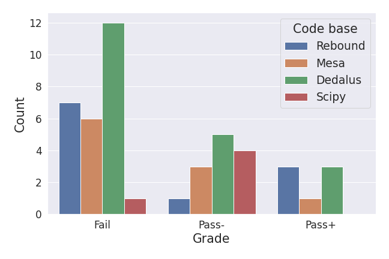

قدرات النماذج اللغوية الكبيرة على محاكاة الفيزياء
Mohamad Ali-Dib
Kristen Menou
Center for Astrophysics and Space Science (CASS), New York University Abu Dhabi, PO Box 129188, UAE
Physics & Astrophysics Group, DPES, University of Toronto Scarborough, Ontario, M1C 1A4, Canada
David A. Dunlap Department of Astronomy & Astrophysics, University of Toronto, Ontario, M5S 3H4, Canada
Department of Physics, University of Toronto, Ontario, M5S 1A7, Canada
Observatoire de la Cote d’Azur, TOP team, Laboratoire Lagrange - CNRS, Nice, France
Abstract
تستطيع النماذج اللغوية الكبيرة (النماذج اللغوية الكبيرة) حل بعض مسائل كتب الفيزياء من مستوى المرحلة الجامعية إلى مستوى الدراسات العليا، كما تُظهر كفاءة عالية في البرمجة. وقد يتيح الجمع بين هاتين القدرتين لأنظمة الذكاء الاصطناعي، في يوم ما، محاكاة العالم الفيزيائي والتنبؤ بسلوكه.
نقدّم تقييمًا لأحدث النماذج اللغوية الكبيرة (الأحدث أداءً) في مسائل فيزياء حسابية تمتد من مستوى الدكتوراه إلى مستوى البحث العلمي. ونقيّد توليد النماذج اللغوية الكبيرة باستخدام حزم برمجية موثقة جيدًا وشائعة الاستعمال، بغرض استثارة قدراتها البرمجية في مجالي الفيزياء والفيزياء الفلكية. ونقدّم ∼ 50 مسائل أصلية وصعبة في الميكانيكا السماوية (باستخدام REBOUND)، وفي الفيزياء النجمية (باستخدام MESA)، وفي ديناميكيات الموائع 1D (باستخدام Dedalus)، وفي الديناميكيات غير الخطية (باستخدام SciPy). وبما أن مسائلنا لا تقبل حلولًا وحيدة، فإننا نقيّم أداء النماذج اللغوية الكبيرة وفق عدة مقاييس مرنة: أعداد الأسطر التي تحتوي أنواعًا مختلفة من الأخطاء (برمجية، وفيزيائية، وأخطاء ضرورة وكفاية)، إضافة إلى مقياس نجاح/رسوب أقرب إلى التقييم التعليمي يركز على التقاط المكونات الفيزيائية الجوهرية للمسألة المطروحة.
وكما هو متوقع، فإن أحدث نموذج لغوي كبير متاح حاليًا (GPT4) يفشل، من دون أمثلة مسبقة، في معظم مسائلنا، مع أن نحو 40% من الحلول يمكن أن تنال درجة نجاح على نحو معقول. ونجد أن نحو 70 − 90% من أسطر الشفرة المنتجة ضرورية وكافية وصحيحة من الناحيتين البرمجية والفيزيائية. وتمثل الأخطاء الفيزيائية والبرمجية أكثر الأخطاء شيوعًا، مع وجود بعض الأسطر غير الضرورية أو غير الكافية. كما نلاحظ تباينات كبيرة باختلاف صنف المسألة ودرجة صعوبتها. ونحدد عدة أنماط فشل لدى GPT4 في مجال الفيزياء الحسابية، منها ضعف التعامل مع الوحدات الفيزيائية، وضعف ضبط إصدارات الشفرة، والميل إلى هلوسة وحدات فرعية ذات أسماء تبدو معقولة، وغياب التبرير الفيزيائي لمعاملات التشغيل العامة (مثل زمن المحاكاة أو الحدود العليا والدنيا للاستكشاف البارامتري)، والعجز عن تعريف الحالة المستقرة أو شروط الإيقاف تعريفًا موثوقًا.
يوفر عملنا الاستطلاعي صورة راهنة للقدرات الحسابية الحالية في الفيزياء الكلاسيكية، ويشير إلى أهداف تحسين واضحة إذا كان لأنظمة الذكاء الاصطناعي أن تبلغ يومًا مستوى أساسيًا من الاستقلالية في قدرات محاكاة الفيزياء.
1 مقدمة
النماذج اللغوية الكبيرة (النماذج اللغوية الكبيرة) فئة من نماذج الذكاء الاصطناعي تستفيد من كميات ضخمة من البيانات النصية لتعلّم النصوص الشبيهة بالكتابة البشرية وتوليدها، مما يمكّنها من أداء طيف واسع من مهام معالجة اللغة الطبيعية بكفاءة لافتة (Minaee et al., 2024; Kaddour et al., 2023a).
تُظهر النماذج اللغوية الكبيرة مجموعة واسعة من القدرات، بما في ذلك قدرات في مجالات متصلة بالعلوم (Kaddour et al., 2023b). وتتمتع النماذج الأعلى أداءً بقدرات قوية في البرمجة (مثلًا، Khan et al., 2023; Liu et al., 2023)، كما تُستكشف قدراتها في الأحياء والكيمياء والرياضيات والفيزياء بنشاط (مثلًا، Wang et al., 2023a; Boyko et al., 2023; Abedi et al., 2023; Wang et al., 2023b). وقد ركزت معظم تقييمات النماذج اللغوية الكبيرة في العلوم حتى الآن على مسائل الكتب المدرسية من المرحلة الثانوية إلى المرحلة الجامعية، ويرجع ذلك جزئيًا إلى توافقها مع مستوى أداء النماذج المتقدمة حاليًا. وفي الوقت نفسه، تُظهر نتائج هذه النماذج على المعايير القياسية دلائل على التشبع (Maslej et al., 2023)، مما يشير إلى الحاجة إلى طرائق تقييم أشد تحديًا وموجهة إلى نماذج الجيل التالي. وقد بدأت بالفعل تظهر في الآونة الأخيرة معايير وتقييمات تستهدف قدرات أعلى (مثلًا، Rein et al., 2023; Mialon et al., 2023; Research AI4Science & Azure Quantum, 2023).
كان إيقاع التقدم في قدرات النماذج اللغوية الكبيرة خلال السنوات القليلة الماضية ملحوظًا، مع اختراقات متواصلة بفعل التوسيع، من GPT 2 في 2019 إلى GPT 4 في 2023 (مثلًا، Bowman, 2023)، في حين بدأت القدرات متعددة الوسائط تصبح متاحة الآن (مثلًا، OpenAI, 2023; Yang et al., 2023). ويجعل هذا التقدم السريع من الممكن تصور مستقبل تؤدي فيه النماذج اللغوية الكبيرة، أو أنظمة ذكاء اصطناعي ذات صلة، أداءً بمستوى البشر ذوي التعليم الواسع (مثلًا، Morris et al., 2023; Anthropic, 2023)، ثم بمستوى مساعدين في البحث العلمي (Steinhardt, 2023; Liu et al., 2023). كما نوقشت في الأدبيات إمكانية أن تتقدم أنظمة الذكاء الاصطناعي إلى مستوى تبدأ فيه بإنتاج حلول علمية أصلية، يُفترض أن يتحقق منها خبراء بشريون، وذلك غالبًا في سياق تحديات المواءمة والسلامة الاستثنائية التي قد يخلقها مثل هذا الوضع (مثلًا، Christiano et al., 2021; Hubinger et al., 2023; Michael et al., 2023; Brown-Cohen et al., 2023). ومن الجوانب ذات الصلة المحتملة أن برهانًا مبدئيًا حديثًا بيّن، في مجال الشطرنج تحديدًا، أن الخبراء البشريين يمكن أن يتعلموا من قدرات ذكاء اصطناعي فوق بشرية (Schut et al., 2023). ومن منظور أوسع، قد تكون لتقييم القدرات العلمية للنماذج اللغوية الكبيرة وأنظمة الذكاء الاصطناعي ذات الصلة آثار لاحقة في ممارسة العلم وفي ممارسات السلامة والمواءمة.
في هذه الورقة، نعرض نهجًا محددًا لتقييم قدرات النماذج اللغوية الكبيرة في الفيزياء عند مستوى الدراسات العليا والبحث. وينصب تركيزنا الأساسي على قدرة هذه النماذج على توليد شفرة موثوقة لمحاكاة سيناريوهات فيزيائية معقدة ذات أهمية في البحث الأكاديمي، عند مستوى يؤديه عادة طلاب الدراسات العليا والباحثون. وبحكم التصميم، يقترب إطار التقييم لدينا من حد الخبرة التخصصية في مجال أكاديمي معين. ونتوقع أن بعض العناصر الأساسية في نهجنا قد تنتقل إلى تخصصات أخرى غنية بالمحاكاة.
تُعد المحاكاة العددية أداة عمل أساسية في البحث العلمي عبر مجالات فرعية متعددة في الفيزياء. وهي تتطلب مزيجًا من مهارات متخصصة في البرمجة والفيزياء. وفي العقد الأخير تقريبًا، أدى التوفر المتزايد لحزم مفتوحة المصدر مرنة وموثوقة، بُنيت لحل فئات عامة من المسائل العلمية في مجال فرعي معين، إلى تحسين موثوقية أعمال المحاكاة وقابليتها لإعادة الإنتاج عند استخدام هذه الحزم القياسية. واستنادًا إلى هذه الممارسة، نستخدم في عملنا أدوات محاكاة مفتوحة المصدر موثقة جيدًا ومختبرة بعناية: REBOUND3 للميكانيكا السماوية (Rein & Liu, 2012; Tamayo et al., 2020)، وMESA4 للفيزياء النجمية (Paxton et al., 2011)، وDedalus5 لفيزياء الموائع والأوساط المتصلة (Burns et al., 2020)، وSciPy6 للديناميكيات غير الخطية (Virtanen et al., 2020).
يعزز استخدام هذه الأدوات مفتوحة المصدر الشفافية في تحليلنا، لكنه يخدم أيضًا غرضًا تصميميًا محددًا. فالتوفر الواسع لهذه الأدوات على الإنترنت، وكثرة الأمثلة التي توضّح استخدامها، يزيدان كمون أن يكون النموذج اللغوي الكبير قد شاهد أمثلة شفرة عديدة ذات صلة أثناء التدريب المسبق، بما يمكّنه من التعميم إلى مسائل جديدة باستخدام هذه الأدوات. ونظرًا إلى قوة النماذج اللغوية الكبيرة في البرمجة، مقابل قدراتها المحدودة حاليًا في الفيزياء، يتيح لنا هذا النهج تثبيت مهمة التوليد في مسائلنا على قاعدة شفرة محددة، وربما يكشف عن نواقص في نماذج العالم الفيزيائي التي تعلمتها هذه النماذج.
وثمة سبب آخر للتركيز على المحاكاة الفيزيائية، أو المحاكاة العلمية عمومًا، هو أن قدرات المحاكاة قد تصبح في نهاية المطاف عاملًا في إطلاق وكلاء من النماذج اللغوية الكبيرة يتفاعلون مع العالم. فالقدرة على محاكاة العالم الفيزيائي بصورة موثوقة، ومن ثم التنبؤ به، قد تصبح اعتبارًا إضافيًا في سلامة وكلاء الذكاء الاصطناعي ذوي القدرات العالية ومواءمتهم، إذ يمكنهم من حيث المبدأ اتخاذ أفعال أوسع اطلاعًا على أساس فهم محاكى للعالم.
2 الطرق
2.1 تعقيد مهمة الفيزياء
كخطوة أولية لتصميم مسائل الفيزياء على مستوى البحث لتقييم النماذج اللغوية الكبيرة، نجد أنه من المفيد تصنيف مسائل الفيزياء إلى فئات تعقيد متميزة:
- الفئة الأولى - تستدعي المسألة إجابة غير بارامترية وفريدة ومحددة (على سبيل المثال، قيمة كمية محددة من الاهتمام، والوقت المناسب لحدث ما، وما إلى ذلك..)
- الفئة الثانية - تتطلب المسألة إجابة بارامترية. أي أن الإجابة المرضية يجب أن تأخذ في الاعتبار الاعتماد على واحد أو أكثر من المعلمات الواضحة للنظام (على سبيل المثال، يعتمد الاستقرار العالمي لنظام الكواكب على الكتل والتكوينات المدارية التفصيلية للكواكب الفردية، بالإضافة إلى النافذة الزمنية محل الاهتمام). تتضمن هذه الفئة إمكانية الحاجة إلى مسح مساحة المعلمة لتقديم إجابة كمية.
- الفئة الثالثة - في هذه الحالة، للحصول على حل صالح، يجب مراعاة فيزياء إضافية (ضمنية) تتجاوز ما هو صريح في بيان المسألة. يمس هذا الفيزياء كونها علمًا اختزاليًا غالبًا ما تُستخدم فيه حجج ترتيب الحجم لتضييق نطاق نظام نموذجي مبسط يلتقط بشكل كافٍ الظواهر محل الاهتمام (على سبيل المثال، يمكن أن تتجاهل مدارات الأقمار الصناعية الحسابية حول الأرض بأمان أو قد يُطلب منها حساب جاذبية القمر، اعتمادًا على تفاصيل مشكلة القمر الصناعي قيد النظر). هذه قدرة صعبة، يمكن القول إنها على مستوى البحث وتتطلب نموذجًا عالميًا قويًا للفيزياء، بما في ذلك فهم التسلسل الهرمي للنمذجة في الفيزياء (على سبيل المثال، في أي الأنظمة يحتاج المرء إلى الأوصاف الكلاسيكية مقابل الأوصاف الكمية مقابل الأوصاف النسبية).
- الفئة الرابعة - مسائل خارج التوزيع - في هذه الحالة نادرًا ما تتم مناقشة المسألة في الأدبيات العلمية و/أو لا تحدث عادةً في الطبيعة. ومع ذلك، يمكن معالجتها باستخدام القوانين والمبادئ الفيزيائية. يمثل هذا شكلاً قويًا من أشكال التعميم في الفيزياء (مثلًا، يمكن استخدام تغيرات افتراضية في الثوابت الأساسية للاستدلال على المبدأ الأنثروبي؛ Carr & Rees, 1979; Adams, 2016).
معظم مسائل التقييم الموجودة في أدبيات الذكاء الاصطناعي هي من الدرجة الأولى لأنها تعترف بإجابة محددة بناءً على حقيقة أرضية محددة جيدًا، والتي يمكن من خلالها حساب مقاييس الأداء الكمية (مثلًا، Hendrycks et al., 2021; Rein et al., 2023; Mialon et al., 2023). على النقيض من ذلك، فإن معظم المسائل على مستوى البحث ليس لها إجابات فريدة ومحددة، ومن الشائع أن تحظى العديد من الإجابات المقبولة بالاعتبار (حتى يتقارب المزيد من التدقيق والنقاش العلمي مع وجهة نظر متفق عليها). على مستوى تعليم الدراسات العليا (PhD)، قد يتوقع المرء أن يؤدي الطلاب أداءً مُرضيًا في مسائل الفصل I-III وربما IV.نحن نصمم مسائلنا باستخدام التصنيف أعلاه كدليل عام، ونحاول تغطية المستويات المختلفة لتعقيد المهام الموصوفة في الفئات I-IV أعلاه.
2.2 أساسيات قواعد الشفرة
اختيرت قواعد الشفرة الأربع استنادًا إلى كونها مفتوحة المصدر، وإلى اتساع توثيقها على الإنترنت، واعتماد مجتمع البحث عليها على نطاق واسع، وإلمام المؤلفين بها.
2.2.1 REBOUND
REBOUND (Rein & Liu, 2012; Tamayo et al., 2020) هو، كما يرد في توثيقه، “مكامل للأجسام N؛ أي حزمة برمجية تستطيع تكامل حركة الجسيمات تحت تأثير الجاذبية. ويمكن أن تمثل الجسيمات نجومًا أو كواكب أو أقمارًا أو حلقات أو جسيمات غبار. إن REBOUND مرن جدًا، ويمكن تخصيصه لحل مسائل كثيرة في الفيزياء الفلكية بدقة وكفاءة.” REBOUND مكتوب بلغة C، وله واجهات تطبيقات بكل من C وPython. وفيما يلي مثال عملي أدنى يوضح وظائفه الأساسية:
sim = rebound.Simulation() sim.add("Sun") sim.add("Jupiter") sim.add("Saturn") sim.integrate(100) for orbit in sim.orbits(): print(orbit)
في هذه الشفرة، أنشأنا محاكاة rebound جديدة في السطر 2، وأضفنا الشمس والمشتري وزحل على مداراتها الحالية في الأسطر 3-5، ثم طلبنا من REBOUND أن يكامل، أي يطوّر، مداراتها لمدة 100 سنة في السطر 6، وأن يطبع المدارات النهائية في السطر 7-8.
2.2.2 MESA
MESA (Paxton et al., 2011) شفرة تبني نموذجًا لباطن النجم، ثم تطوره زمنيًا بحل معادلات البنية والتركيب 1D المقترنة بالكامل والحاكمة للتطور النجمي. وهي مكتوبة بلغة Fortran، مع أن المستخدم يستطيع في حالات كثيرة إعداد المسائل باستخدام Inlists، وهي الواجهة الأمامية الخاصة بـMESA، من دون الحاجة إلى أي برمجة. ويمكن كتابة شفرة Fortran واستدعاؤها لإضافة فيزياء إضافية أو إعدادات مخصصة معقدة.
فيما يلي مثال Inlist عملي أدنى:
! begin with a pre-main sequence model create_pre_main_sequence_model = .true. &controls ! starting specifications initial_mass = 15 ! in Msun units initial_z = 0.02 ! stop when the star nears ZAMS (Lnuc/L > 0.99) stop_near_zams = .true.
هنا وجّهنا MESA إلى تطوير المراحل المبكرة لنجم كتلته 15 كتلة شمسية (السطر 9) وبمعدنية شمسية (السطر 10)، بدءًا من مرحلة ما قبل النسق الرئيسي (السطر 4) حتى بلوغه النسق الرئيسي صفري العمر (السطر 13).
2.2.3 Dedalus
Dedalus إطار مرن ومفتوح المصدر لحل معادلات تفاضلية جزئية اعتباطية في أبعاد اعتباطية، باستخدام الطرائق الطيفية. ويستخدم Dedalus واجهة Python ومكتبات علمية مسبقة الترجمة وعالية الكفاءة في الواجهة الخلفية. وتشمل ميزاته الأساسية واجهة سهلة الاستخدام لإدخال المعادلات رمزيًا، وتحليلًا آليًا للمجال يتيح موازاة مبنية على MPI من دون تدخل يدوي في الأبعاد المتعددة. فيما يلي تنفيذ Dedalus عملي أدنى لمسألة انتشار 1D مباشرة:
from dedalus import public as de # Create the domain: # use Chebyshev spectral decomposition on finite domain x=[0,1] # also set numerical precision x_basis = de.Chebyshev(’x’, 256, interval=(0, 1)) domain = de.Domain([x_basis], np.float64) # Define the problem: # initial value problem with two fields, u and ux problem = de.IVP(domain, variables=[’u’, ’ux’]) # Problem equations: # diffusion equation problem.add_equation("dt(u) - dx(ux) = 0") problem.add_equation("ux - dx(u) = 0") # Problem boundary conditions: # zero flux on each domain side problem.add_bc("left(ux) = 0") problem.add_bc("right(ux) = 0") # Set the initial condition x = domain.grid(0) u = solver.state[’u’] u[’g’] = (x-0.5)**2 # Set up the solver # use advanced Runge-Kutta time-stepper solver = problem.build_solver(de.timesteppers.RK443) # Stopping criterion solver.stop_iteration = 1000 # Main loop: step forward in time on timestep dt while solver.proceed: solver.step(dt=1e-3)
يُنشأ المجال العددي المحدود في الأسطر 6-7، وتُعد المسألة في الأسطر 11 و15-16 و20-21. وتُضبط الشروط الابتدائية في السطر 27. ثم يُبنى حالّ المسألة في السطر 31، وتتقدم الخطوات الزمنية في الأسطر 37-38.
2.2.4 Scipy
Scipy “توفّر خوارزميات للتحسين، والتكامل، والاستيفاء، ومسائل القيم الذاتية، والمعادلات الجبرية، والمعادلات التفاضلية، والإحصاء، وغير ذلك”. ونستخدمها هنا حصرًا حالًّا للمعادلات التفاضلية العادية (ODE). وهي مبنية فوق مكتبات حساب عددي مكتوبة بلغتي Fortran وC. ويستخدم GPT4 الطريقة scipy.integrate.odeint7 في مسائل التقييم المختلفة لدينا.
2.3 تصميم المسائل
نقدّم ∼ 50 مسألة أصلية وصعبة. ونتخذ لهذه المسائل خط أساس يتمثل في سيناريو افتراضي يكون فيه طلاب الدكتوراه قد أتموا للتو مقررًا للدراسات العليا في موضوع فيزيائي محدد، يتضمن مكوّنًا حسابيًا عرّفهم بالأدوات العددية القياسية التي يستخدمها مجتمع البحث المعني. ومن ثم يمكن أن تكون المسائل التي نصممها عناصر معقولة في امتحان منزلي نهائي لمثل هذا المقرر.8
بعض المسائل التي نصممها أشد صعوبة بكثير من غيرها، كما قد يُتوقع في امتحان منزلي نهائي. غير أننا، بخلاف الامتحان الاعتيادي في الدراسات العليا، نحتاج في هذا العمل إلى الانتباه إلى كمون أن يكون النموذج اللغوي الكبير قد شاهد وحفظ عددًا كبيرًا من حلول الشفرة ذات الصلة ضمن تدريبه المسبق الواسع على الشفرة. ولتقليل خطر تلوث البيانات، نتجنب المسائل القياسية ونقدّم بدلًا من ذلك مسائل أصلية صيغت خصيصًا لهذا العمل. وبعبارة أخرى، صُممت مسائلنا لاستثارة مستوى ما من قدرات التعميم الفيزيائي لدى النماذج اللغوية الكبيرة. ونلاحظ أن عملية توليد المسائل لدينا تتأثر بقوة بخبرة المؤلفين البحثية والتدريسية، وبانحيازاتها الطبيعية. لذلك فإن مجموعتنا المحدودة من 47 مسألة أقرب إلى أن تكون توضيحية منها إلى أن تكون ممثلة لكل مسائل الفيزياء الحسابية الممكن تصورها في هذا السياق. ومن المرجح أن مجموعة أكثر تنوعًا وانتظامًا من المسائل يمكن الحصول عليها باستقطاب مجموعة أكبر من خبراء المجال لاتباع منهجية دقيقة في توليد المسائل.
ومع ذلك، نحاول تغطية طيف واسع من الحالات الفيزيائية ضمن كل مجال فرعي، مع اعتماد المبادئ الخاصة بكل مجال في تصميم المسائل:
- الفيزياء النجمية باستخدام MESA: نصمم مسائل عند مستوى بحثي يتجاوز ما يرد عادة في كتب الدراسات العليا. ونركز على موضوعات مثل أعمار النجوم، وانتقال الطاقة، والتركيب الداخلي، والرياح السطحية. وتغطي الأمثلة دورة حياة النجم حتى مرحلة ما بعد النسق الرئيسي. وقد صُممت المسائل بحيث يمكن حل أبسطها باستخدام خيارات inlist والمعالجة اللاحقة للبيانات فقط، في حين تتطلب المسائل الأكثر تعقيدًا تنفيذًا يدويًا لإجراءات فيزيائية إضافية و/أو شروط إيقاف مكتوبة بلغة Fortran، وهو أمر شائع في الأبحاث التي تستخدم MESA. وتغطي أمثلة خارج التوزيع حالة النجوم ذات التراكيب غير المألوفة.
- الميكانيكا السماوية باستخدام REBOUND: نركز على مسائل ديناميكية كوكبية، بما في ذلك الكواكب الخارجية، تتكرر في بيئات البحث الحديثة وفي الأدبيات الأكاديمية، مثل هجرة الكواكب، والاستقرار الديناميكي، ورنينات الحركة المتوسطة. ونصمم أمثلة بمستوى بحثي تشمل النظام الشمسي وأنظمة الكواكب الخارجية، بل نمزج بينهما في بعض الحالات للاختبار. ولا نقدّم أي معلومات عن المدارات الابتدائية للكواكب إلا عندما تكون ضرورية تمامًا، بما يتيح اختبار قدرة النماذج اللغوية الكبيرة على استدعاء المعلومات الأساسية في هذا السياق. وندرج كذلك أمثلة خارج التوزيع، مثل حالات قابلة للحل تتضمن عناصر مشتتة للانتباه كالكواكب المشحونة كهربائيًا.
- ديناميكيات الموائع 1D باستخدام Dedalus: تظهر كثير من ظواهر الموائع الأساسية في 1D، ويمكن تحليلها بصورة ملائمة إلى عمليات حمل، وانتشار (معادلات تفاضلية جزئية مكافئة)، وموجات (معادلات تفاضلية جزئية زائدية). ونركز على هذه السيناريوهات المثالية الثلاثة كلًا على حدة، مع أن السيناريوهات الأكثر واقعية كثيرًا ما تجمع العمليات الثلاث في نظام مائع واحد. كما نسترشد بتصميم مسائل غير بديهية تتطلب تعميمًا يتجاوز أمثلة قاعدة الشفرة القياسية وأمثلة الكتب المدرسية، مثل حدود المصدر والمصب، وتحديد موجات الصدمة، واللاخطية. وتشمل حالات خارج التوزيع سرعة موجية اعتباطية معتمدة على الزمن ومضاد الانتشار.
- الديناميكيات غير الخطية باستخدام SciPy: نركز على نظام Lorenz الديناميكي للاستفادة من المعرفة الواسعة وقاعدة الشفرة المتاحة لهذا النظام اللاخطي المفهوم جيدًا (Strogatz, 2000). ونصمم أسئلة غير مباشرة تتطلب فهمًا للنظام المحدد ومبادئ عامة في الفوضى الحتمية، مع حاجة إلى التعميم خارج الصيغة المدرسية القياسية للنظام.
2.4 تصميم الموجهات
بدلًا من تحسين الموجهات بهدف رفع جودة التوليد المشروط، نعتمد صياغة بسيطة تقارب الطريقة التي تُطرح بها المسألة في سياق أكاديمي. وتهدف الموجهة إلى تحديد المسألة الفيزيائية المطروحة بما يكفي ليتمكن طالب دراسات عليا، يمتلك المعرفة المناسبة بالكتب الدراسية وبالشفرة، من إنجاز التكليف. ونضيف كذلك عناصر خاصة بالنماذج اللغوية الكبيرة، إذ نطلب شفرة كاملة ونحدد الحزمة البرمجية وإصدارها اللذين ينبغي استخدامهما لحل المسألة. ونحافظ على هذا العنصر من الموجهة ثابتًا في جميع مسائل الصنف الواحد. وتُناقش تفاصيل خط أنابيب الاستدلال في § 2.6، كما يمكن العثور على مراجعة مفصلة لتقنيات توجيه النماذج اللغوية الكبيرة في Fagbohun et al. (2024).
2.5 تقييم الحلولول
ليس واضحًا مسبقًا ما الطريقة الأنسب لتقييم حلول الشفرة التي تولدها النماذج اللغوية الكبيرة في دراستنا. فطرائق اختبارات الوحدة القياسية المستخدمة كثيرًا في تقييم الشفرة (مثلًا، Chen et al., 2021) ليست ملائمة هنا، لأن هناك متصلًا من مخرجات الشفرة الممكنة التي يمكن أن تُعد حلولًا ناجحة ومرضية. وحتى قابلية الشفرة المولدة للتنفيذ من دون أخطاء ليست مقياسًا كافيًا، إذ إن خطأ برمجيًا واحدًا، ولو كان بسيطًا، لا يلزم أن ينتقص بشدة من حل حسابي فيزيائي مفصل وصحيح في جوانبه الأساسية.
ونظرًا إلى غياب مقاييس صارمة، نعتمد عدة مقاييس مرنة تبقى مفيدة في الحكم على جودة الحلول المولدة. أولًا، نركز تقييماتنا على أسطر الشفرة، مع استبعاد معظم النصوص الإضافية وتعليقات الشفرة التي يولدها النموذج.9
يعتمد تقييمنا للشفرة على أربعة مقاييس تُطبّق على كل سطر مولد:
- هل الشفرة صحيحة من حيث الصياغة البرمجية والمنطق والدلالة؟
- هل الاستدلال الفيزيائي الكامن وراء حل الشفرة صحيح؟
- هل سطر الشفرة ضروري بوصفه عنصرًا في حل المسألة؟
- هل سطر الشفرة كافٍ بوصفه عنصرًا في حل المسألة؟
تشكل هذه المعايير الأربعة أساس عدّنا الكمي للأخطاء ضمن أربع فئات منفصلة: C للأخطاء البرمجية، وP للأخطاء الفيزيائية، وU للأسطر غير الضرورية، وI للأسطر غير الكافية.
ندرك أن تحديد الأخطاء وتصنيفها وفق هذه المحاور يخضع لتقدير المقيم. وقد بذلنا جهدًا للحفاظ على الاتساق في تقييماتنا، مع كمون أن تكون بعض الأخطاء قد فاتت المقيمين رغم العناية. لذلك يمكن تفسير أعداد الأخطاء لدينا بوصفها حدودًا دنيا مستنيرة لا أرقامًا صارمة. ونرى أن إحصاءات أعداد الأخطاء تقدم صورة كلية معقولة عن تواتر الأخطاء وأنواعها في الحلول التي قيّمناها.
ويتمثل نهج ثان في تقديم درجة كلية للحل على غرار التقييم الأكاديمي. والدافع إلى هذه الدرجة البديلة أن الأخطاء البرمجية، ولا سيما الفيزيائية، تتفاوت كثيرًا في خطورتها. فبعض الأخطاء الفيزيائية التي راجعناها تشير، مثلًا، إلى نقص جوهري في فهم المسألة كما طُرحت. وبناءً على ذلك، نسند إلى كل حل من الحلول المقيمة إحدى ثلاث درجات: Fail، وPass-، وPass+. وينبغي فهم هذه الدرجات بوصفها تقييمات أكاديمية تقريبية لحلول محتملة يقدمها طلاب دراسات عليا لهذه المسائل في ظروف امتحان معقولة، كأن يكون الزمن 30 دقيقة لكل مسألة وفي سياق كتاب مفتوح.
لم نتحقق بصورة منهجية مما إذا كانت الحلول تعمل أو تولد مخرجات معقولة، لأن ذلك ليس جزءًا من استراتيجية تقييمنا. بل نتوقع أن معظم الحلول لا تنتج مخرجات، أو تنتج مخرجات غير ملائمة للمسألة المطروحة وفق تحليل الأخطاء لدينا. وتُعرض أمثلة توضيحية للأخطاء البرمجية والفيزيائية، وللأسطر غير الضرورية وغير الكافية، من خلال مقتطفات من حلول GPT4 في § sec:showcase.
لم تُبذل محاولة مفصلة لمعايرة الأخطاء بين المقيمين: صمم المؤلف MAD مسائل REBOUND وMESA وقيّمها، بينما صممت المؤلفة KM مسائل Dedalus وScipy وقيّمتها. وبصورة غير رسمية، راجع كلا المؤلفين جميع المسائل المولدة، إضافة إلى عينة من التقييمات التي أجراها المؤلف الآخر. وندرك أن تصميم المسائل ومنهج التقييم لدينا لا يبلغان المعايير المتبعة في أدبيات تعلم الآلة التي تسعى إلى ضمان تنوع مجموعة البيانات وخلو مقاييس التقييم من الانحياز. ويرجع هذا القصور في عملنا إلى حد كبير إلى الصعوبة المتأصلة في توليد مسائل أصلية وذات معنى في مجال أكاديمي عالي التخصص، وإلى الوقت الكبير الذي تتطلبه مرحلة التقييم.
2.6 خط أنابيب الاستدلال
نستخدم حزمة OpenAI للغة Python لتشغيل استدلالاتنا، مع gpt-4-0314 بوصفه النموذج اللغوي الكبير، وكان تاريخ قطع المعرفة في سبتمبر 2021. ضبطنا معامل “temperature” على 0، وتركنا المعاملات الأخرى عند قيمها الافتراضية. أُجريت جميع الاستدلالات في 25 تشرين الأول/أكتوبر 2023. ونلاحظ أننا اختبرنا بإيجاز إصدارات أخرى من GPT4، بما في ذلك إصدار “turbo” الجديد (gpt-4-1106-preview)، لكننا لم نجد تحسينات واضحة لأغراض هذا العمل مقارنة بالإصدار المستخدم في تحليلنا. يولد خط الأنابيب موجهة مركبة نهائية ويرسلها إلى API باستخدام “دورين”، هما النظام والمستخدم، وبالقالب الآتي:
- النظام: أنت مساعد برمجي مفيد لعالم.
- المستخدم: تساعد في حل مسألة فيزيائية محددة بكتابة شفرة Python
تستفيد من حزم Python متخصصة في المجال، كما يطلب العالم. ينبغي أن
تكون الشفرة مشروحة بتعليقات وافية لزيادة الوضوح وبيان الخيارات
الفيزيائية والبرمجية المتخذة في الحل. ويجب عليك دائمًا اتباع
التعليمات المعطاة بدقة ودون حذف.
الموجهة:<...>
أما قالب تعليمات الموجهة الخاص بكل قاعدة شفرة فهو كالآتي:
- MESA: حل المسألة الآتية بتوفير المدخلات الكاملة لأحدث إصدار من
شفرة الفيزياء النجمية MESA، بما في ذلك ملف inlist_project الذي
يضبط خيارات المسألة ومعاملاتها، وملف run_star_extras.f بلغة Fortran
لإضافة فيزياء إضافية. وينبغي كذلك توفير شفرة تحليل بيانات ومعالجة
لاحقة بلغة Python لتوليد حل نهائي كامل من ملفات الخرج .data الخاصة
بـ MESA.
المسألة:<...> - REBOUND: استخدم حزمة REBOUND لتكامل الأجسام N بلغة Python، الإصدار 3.12.2، وامتدادها REBOUNDx، الإصدار 3.1.0، لحل المسألة الآتية: <...>
- Dedalus: المسألة:<...>. استخدم حزمة Dedalus لحل المعادلات التفاضلية الجزئية بلغة Python، الإصدار 2. قدّم شفرة كاملة صالحة للتنفيذ.
- SciPy: المسألة:<...>. استخدم مكامل ODE من حزمة SciPy للغة Python. قدّم شفرة كاملة صالحة للتنفيذ.
3 النتائج
3.1 الإحصائيات والاتجاهات
لا تعد أي من مقاطع الشفرة التي تم إنشاؤها بواسطة GPT4 حلولًا مرضية تمامًا للمسائل التي طرحناها. ومع ذلك، فإن للحلول قيمة جزئية نحاول قياسها باستخدام مقاييسنا المرنة.
نجد أن حوالي 70 − 90% من جميع سطور الأكواد التي تنتجها GPT4 هي في الواقع ضرورية وكافية وصحيحة (ترميز & فيزياء). عادةً، تحتوي الحلول على 25-50 أسطر من الأكواد وتعرض العديد من الأخطاء الفيزيائية (P) وبعض أخطاء البرمجة (C)، مع تناثر بعض أسطر الأكواد غير الضرورية أو غير الكافية. يعرض الجدول 1 إحصائيات ملخصة للأخطاء ودرجات النجاح لكل فئة مشكلة. يعرض الشكل 1 رسمًا بيانيًا للدرجات، مجمعة حسب قاعدة الشفرة.
نلاحظ اختلافات كبيرة عبر فئات المسألة والصعوبة. لوحظ الأداء الأقوى في مسائل الديناميكيات غير الخطية مع SciPy، لكن فئة المسائل هذه تحتوي على أمثلة أقل بكثير من الفئات الأخرى. الأداء في المسائل الفيزيائية النجمية مع MESA، وديناميكيات الموائع مع Dedalus، والميكانيكا السماوية مع REBOUND قابلة للمقارنة على نطاق واسع، على الرغم من اختلاف قواعد الرموز إلى حد ما. وفيزياء الخلفية. يبدو أن فئة التعقيد الأعلى ترتبط بأداء أضعف وربما إنشاء أكواد نائب أكثر تكرارًا، على الرغم من عدم وجود إحصائيات موثوقة لتقديم أي بيان كمي. تشير الأعداد الصغيرة نسبيًا من أخطاء U (وإلى حد ما I) إلى أن إنشاء الشفرة يكون موجزًا وفعالًا بشكل عام.
على مقياس النجاح/الرسوب الأكثر ليونة، نقدر أن حوالي 40% من الحلول التي تم إنشاؤها يمكن أن تحصل على درجة النجاح بشكل معقول، بمعنى أنها تحتوي على ما يكفي من عناصر الفيزياء والبرمجة الأساسية لاجتياز اختبار منزلي بشكل هامشي (انظر الشكل 1 للتفاصيل).أجرينا بالإضافة إلى ذلك اختبارًا داخليًا للتحقق من مستوى الاتفاق بين مؤلفي 2. اختار كل منهم 4 أمثلة لقواعد الأكواد المقابلة لهم ليقوم المؤلف الآخر بمراجعتها. لقد وجدنا درجة عالية جدًا من الاتفاق على الأخطاء المصنفة لأكثر من 90%. تمت ملاحظة اختلافات طفيفة فقط، خاصة بعض الأسطر غير الضرورية من الشفرة التي تم تفويتها، بالإضافة إلى عدد قليل من السطور التي اعتبرها أحد المؤلفين غير كافية دون الآخر. نلاحظ أنه على الرغم من وجود طرق أكثر تطورًا للتحقق من الاتفاق بين المُقيّمين مثل Cohen’s kappa، فإننا نجد أن نهجنا البسيط كافٍ لهذا العمل.
ولعل النتيجة الأكثر إثارة للاهتمام التي نتجت عن عملنا التقييمي هي أننا قادرون على تحديد أنماط الفشل المتسقة ظاهريًا لـ GPT4 في الفيزياء الحاسوبية. ومن أبرز العيوب، والتي تم تحديد بعضها أيضًا أثناء التنقيب (الملحق C)، ما يلي:
- ضعف الأداء في التعامل مع الوحدات الفيزيائية. يتضمن ذلك أخطاء في التحويلات البسيطة من نظام وحدة إلى آخر، ولكن أيضًا بعض الالتباس الواضح بين وحدات الشفرة والوحدات الفيزيائية.
- سوء التعامل مع إصدار الشفرة. GPT4 قد يختار بشكل تعسفي إصدارًا ليس بالضرورة أحدث إصدار متاح في تاريخ انتهاء التدريب ويمكنه استدعاء ميزات غير متوفرة لجميع إصدارات الشفرة ذات الصلة بشكل غير متسق.
- ميل إلى الهلوسة10 الوحدات الفرعية والوظائف ذات أسماء معقولة. في محاولة واضحة لتلبية الطلبات الفورية المباشرة أو القيود الفعالة على حلول المسائل، يمكن لـ GPT4 أن يهلوس الوحدات الفرعية أو الوظائف التي تبدو مسماة بشكل مناسب، ولكنها ببساطة غير موجودة في قاعدة الشفرة. GPT4يمكن أن يهلوس أيضًا بصيغ فيزيائية ذات مظهر معقول ولكنها خاطئة في النهاية.
- عدم وجود مبرر مادي لمعاملات التشغيل العالمية (على سبيل المثال، وقت المحاكاة، أو اختيار الخطوات الزمنية، أو الحدود العلوية والسفلية للاستكشاف البارامتري).
- عدم القدرة على تحديد الحالة المستقرة أو ظروف التوقف بشكل موثوق لعمليات المحاكاة المعتمدة على الوقت.
- ميل لاستخدام المعادلات التقريبية الشائعة خارج نطاق قابليتها للتطبيق المادي.
إلى جانب هذه الاتجاهات الناشئة عبر المسائل المختلفة، نجمع أيضًا أدناه ملاحظات أكثر تفصيلاً حول بعض الأخطاء الأكثر شهرة (الفيزياء والبرمجة) التي ارتكبها GPT4، مجمعة حسب فئة المسألة.

| C: code error
| P: physics error
| I: insufficient error
| U: unnecessary error
| Pass Ratio
| |
| REBOUND
| 1.86±0.83
| 1.50±0.71
| 1.57±0.49
| 2.25±1.64
| 0.36 |
| Dedalus
| 1.75±0.92
| 2.59±1.33
| 1.20±0.40
| 1.83±1.07
| 0.40 |
| MESA
| 2.50±2.01
| 1.50±0.50
| 1.00±0.00
| 0±0.00
| 0.40 |
|
SciPy
| 1.00±0.00
| 1.20±0.40
| 1.40±0.49
| 1.00±0.00
| 0.80
|
| Overall Mean | 1.78 | 1.70 | 1.29 | 1.27 | 0.49
|
| REBOUND
| 2
| 1
| 2
| 1.5
| 0.36
|
| Dedalus
| 1.50
| 3.00
| 1.00
| 1.00
| 0.40
|
| MESA
| 2
| 1.5
| 1
| 0.00
| 0.40
|
| SciPy
| 1.00
| 1.00
| 1.00
| 1.00
| 0.80
|
| Overall Median
| 1.75
| 1.25
| 1.00
| 1.00
| 0.40
|
3.2 عرض الأخطاء
3.2.1 Dedalus
مقتطف الشفرة التالي مأخوذ من مسألة النقل Dedalus. تم تصنيف سطر الشفرة 5 على أنه غير كافٍ (I) في الفشل في تحديد أو حساب التسامح على أسس مادية.
v = 0.1 # Advection velocity L = 1 # Spatial domain length FWHM = 0.3 # العرض الكامل عند نصف القيمة العظمى S = 0.01 # Peak rate amplitude tolerance = 1e-6 # Steady state tolerance
مقتطف الشفرة التالي مأخوذ من مسألة النقل Dedalus. تم تصنيف خطوط الشفرة 2 و 3 على أنها أخطاء فيزيائية (P) في الفشل في تعيين شروط حدود التدفق الصفري (dx(u) = 0) (يشار إليها باسم شروط حدود التدفق الخارجي في بيان المسألة).
problem.add_bc("right(u) = 1") problem.add_bc("left(u) = 1")
مقتطف الشفرة التالي مأخوذ من مشكلة نشر Dedalus. تم تصنيف سطر الشفرة 4 على أنه خطأ في البرمجة (C). يهلوس GPT4 وظيفة "set_initial" غير موجودة في قاعدة الشفرة Dedalus.
x = domain.grid(0) u0 = np.exp(-4 * np.log(2) * (x - 0.5)**2 / 0.3**2) problem.set_initial(’u’, u0)
مقتطف الشفرة التالي مأخوذ من مشكلة الموجة الصوتية Dedalus. تم تصنيف سطر الشفرة 2 على أنه غير ضروري (U) حيث لا يتم استخدام المعلمة المحددة a أبدًا في أي مكان آخر في الشفرة الذي تم إنشاؤه. تم تصنيف سطر الشفرة 3 أيضًا على أنه خطأ فيزيائي (P) نظرًا لأن GPT4 يقوم بإعداد معادلة انتشار مكافئة بدلاً من معادلة موجية زائدية.
problem.parameters[’a’] = a problem.add_equation("dt(u) - dx(ux) = 0") problem.add_equation("ux - dx(u) = 0")
مقتطف الشفرة التالي مأخوذ من مشكلة نشر Dedalus. تم تصنيف أحد أسطر الشفرة الثلاثة 3-5 على أنه غير كافٍ (I) لأن GPT4 فشل في تحديد وقت توقف محدد للمحاكاة. سيؤدي تعيين قيمة محدودة لأي من هذه الخطوط إلى تجنب تشغيل محاكاة لا تنتهي أبدًا.
solver = problem.build_solver(de.timesteppers.RK443) solver.stop_sim_time = np.inf solver.stop_wall_time = np.inf solver.stop_iteration = np.inf
3.2.2 SciPy
مقتطف الشفرة التالي مأخوذ من مشكلة ديناميكيات غير خطية SciPy. تم تصنيف سطر الشفرة 4 في وظيفة "الهدف" على أنه خطأ فيزيائي (P) كـ GPT4 فشل في إعداد شرط أولي على المحور z (يجب أن يكون تعيين المتغير [0,0,25]). تم تصنيف سطر الشفرة 5 في الوظيفة "الموضوعية" على أنه غير كافٍ (I) حيث أن GPT4 يحدد فترة زمنية تعسفية (غير مبررة) ومسبقة لا تعتمد على أي وسيطة مادية أو ديناميكية.
def objective(params): A, omega = params initial_state = [1, 1, 25] # Specific initial condition on the z axis with z=25 t_span = (0, 100) # Time span for integration
3.2.3 REBOUND
مقتطف الشفرة التالي مأخوذ من مشكلة REBOUND ويوضح مشكلة متكررة في أجيال GPT4 إلى REBOUND المسائل. هنا GPT4 يستخدم IAS15 كمتكامل (سطر الشفرة 1)، ولكن بعد ذلك في سطر الشفرة 2 يحدد خطوة زمنية على الرغم من أن IAS15 يحدد ويكيف خطوته الزمنية تلقائيًا. تم تصنيف سطر الشفرة 2 على أنه غير ضروري (U). علاوة على ذلك، لاحظ أنه حتى لو كان على المرء تحديد خطوة زمنية، فإن القيمة المقترحة بواسطة النموذج اللغوي الكبير (0.5) مرتفعة جدًا.
sim.dt = 0.5 * sim.particles[1].P # half of Neptune’s period
3.2.4 MESA
مقتطف الشفرة التالي مأخوذ من مشكلة (MESA). تم تصنيف سطر الشفرة 8 على أنه خطأ فيزيائي (P) حيث أن GPT4 يحدد معادلة معدل فقدان الكتلة النجمية غير الموجودة (وغير ذات معنى فيزيائي).
! For example, you can use the Reimers formula or Vink et al. (2001) formula ! Here, we use a simple example formula: wind_mass_loss_rate = C * mass^2 / radius ! where C is a constant that you can adjust to match the desired wind mass loss rate real(dp) :: C C = 1d-13 wind_mass_loss_rate = C * mass**2 / radius
مقتطف الشفرة التالي مأخوذ من مشكلة (MESA). سطر الشفرة 14 تم تصنيفه على أنه I (غير كافٍ) كـ GPT4 يحدد علامة حالة التوقف غير الموجودة في inlist، بدلاً من تنفيذها يدويًا. بالإضافة إلى ذلك، تم تصنيف سطور الشفرة 7 و9 و11 على أنها أخطاء C (برمجية) نظرًا لأن GPT4 يستخدم عنصر تحكم غير موجود الأعلام (الموجودة، ولكن تحت أسماء مختلفة).
! Set the initial metallicity initial_z = 0.02 ! Set the mixing length theory parameter mixing_length_alpha = 1.5 ! Set the maximum number of steps max_num_steps = 10000 ! Set the maximum number of retries max_num_retries = 100 ! Set the maximum number of backups max_num_backups = 100 ! Set the stopping condition for carbon burning stop_at_carbon_burning = .true.
3.3 ملاحظات إضافية: REBOUND
- في جميع المسائل البارامترية التي سُئل فيها النموذج اللغوي الكبير عن جسم x “موضوع بين الكوكب a والكوكب b”، استخدم GPT4 المتوسط الحسابي للمحورين شبه الرئيسيين للكوكبين a وb موقعًا للجسم x. ولم تُعامل هذه الكمية في أي مرحلة بوصفها معاملًا فعليًا قابلًا للاستكشاف، كما كان ينبغي.
- في جميع أسئلة الاستقرار المداري، كان GPT4 يتحقق دائمًا من عدم الاستقرار بالبحث عن أي اقتراب قريب داخل النظام. وهذا إشكالي لأن (1) الاقتراب القريب المعلّم قد لا يكون ذا صلة بالكوكب/الجسم محل السؤال، و(2) الاقتراب القريب لا يعني بالضرورة عدم الاستقرار المداري.
- في جميع المسائل المتعلقة برنينات الحركة المتوسطة (MMR)، كان GPT4 يبحث عن الرنين بالتحقق مما إذا كانت الفترات تشكل نسبة صحيحة بسيطة، من دون فحص الشروط الرسمية مثل ليبران زوايا الرنين. وقد يكون ذلك مضللًا، إذ يمكن لجسمين أن يمتلكا فترات ذات نسبة صحيحة من غير أن يكونا محبوسين فعليًا في رنين.
- وعلى خلاف كواكب النظام الشمسي، أخفق GPT4 في الحصول على المعاملات المدارية الصحيحة للكواكب الخارجية، مثل الكتلة والمحور شبه الرئيسي والانحراف المركزي، عندما زُوّد باسم الكوكب فقط. وتشير قرائن ظرفية إلى أن ذلك يمكن معالجته بالإحالة إلى قواعد بيانات شائعة ومحددة.
3.4 ملاحظات إضافية: MESA
- الجيل الحالي النماذج اللغوية الكبيرة غير قادر على توليد MESA inlist بالتركيب الصحيح، على الرغم من أنهم يبدون على دراية بالشفرة واستخداماته ومبادئه. inlists ليست تعليمات برمجية من الناحية الفنية، ولكنها قائمة بالأعلام والمعلمات. بينما يبدو أن GPT4يتعامل مع هذا الأمر، فإنه غالبًا ما يستخدم إشارات غير موجودة بأسماء مختارة بشكل معقول، بدلاً من الأسماء الصحيحة، أو يضع العلامات ضمن الفئة الفرعية inlist الخاطئة. يؤدي هذا عادةً إلى GPT4 تقليل حل مشكلة معقدة إلى علامة غير موجودة بدلاً من حل المسألة فعليًا.
- GPT4 يمكن أن يميز في معظم الأحيان بين ما يدخل في inlist كعلم وما يجب أن يدخل فيه run_star_extras.f الملفات كرمز Fortran.
- عندما كانت شروط الإنهاء المحددة ضرورية، GPT4 غالبًا ما تستخدم فقط إشارات إنهاء inlist غير موجودة، والتي تم تسميتها بشكل معقول للمهمة. كانت معايير الإنهاء موجودة في بعض الأحيان ولكن تحت اسم علم مختلف، على الرغم من أنه في كثير من الحالات كان ينبغي تنفيذ شروط الإنهاء يدويًا.
- عندما كانت المعالجة اللاحقة للإخراج MESA ضرورية للحصول على إجابة نهائية، كان شفرة Python المقابل الذي تم إنشاؤه بواسطة GPT4 كافيًا عادةً. وهذا يسلط الضوء بشكل أكبر على الخلاف بين قدرة GPT4 في البرمجة مقابل تعيين أعلام inlist.
- GPT4 استدعى تلقائيًا إشارات نظرية طول الخلط التي كانت ضرورية عند حل المسائل المتعلقة بالحمل الحراري.
- في المسائل التي لا تحتوي على معايير إيقاف واضحة، كانت المسائل التي تم اختيارها بواسطة GPT4 في كثير من الأحيان تعسفية.
- على غرار REBOUND الحالات، GPT4 كان لديه ميل إلى MESA لإصلاح أي معلمة ضمنية بقيمة ثابتة بدلاً من استكشاف نطاق ذي صلة من القيم.
3.5 ملاحظات إضافية: Dedalus
- GPT4 قادر في كثير من الأحيان على تحميل الوحدات المناسبة وإعداد المسألة على نطاق واسع (أي تحديد المجال والمتغيرات والمعلمات والتسلسل الزمني وما إلى ذلك...) ضمن قاعدة الشفرة Dedalus، بحيث تميل الأخطاء إلى أن تكون أضيق وأكثر تحديدًا من إعداد المسألة العامة.
- GPT4 عرضة للهلوسة الخاصة بقاعدة الشفرة، عن طريق استدعاء الوحدات الفرعية والوظائف (أو السمات ذات الصلة) غير الموجودة. تمت تسمية هذه الميزات المهلوسة بشكل معقول، نظرًا للسياق الذي تم استدعاءها فيه، مما يعني أنه قد تكون هناك حاجة إلى فحص دقيق لوثائق الشفرة لاستبعاد وجودها.
- مع الإحصائيات المحدودة المتاحة، يبدو أن GPT4 يؤدي أداءً أفضل في الانتشار من مسائل النقل، وأسوأ في مسائل الموجة.
- يبدو أن بعض الأخطاء الفيزيائية تحتوي على مكون عشوائي، بمعنى أن الخطأ قد يكون موجودًا في مشكلة واحدة ولكنه غائب في مشكلة أخرى ذات صلة، على الرغم من أن كلتا المشكلتين تستدعيان نفس السطر من الشفرة. بالإضافة إلى ذلك، فإن بعض الأخطاء الفيزيائية الصارخة لا يمكن توقعها عند مستوى أداء الدراسات العليا.
- GPT4 يفشل أو يجد صعوبة في تحديد وقت التشغيل المبرر فيزيائيًا للمسائل المعتمدة على الوقت. ومن الناحية المثالية، سيتم حساب ذلك من معاملات التشغيل العالمية والاعتبارات العامة الأخرى. GPT 4 فشل أيضًا في تحديد أو تحديد المقاييس الجيدة للحالة المستقرة في المسائل المعتمدة على الوقت.
- GPT4 يفشل في تبرير قيم معاملات التشغيل العالمية على أسس مادية، مثل الحدود المعقولة والخطوات في استكشاف الفضاء المنهجي للمعلمات.
3.6 ملاحظات إضافية: SciPy
- GPT4 يؤدي أداءً جيدًا نسبيًا في المسائل المتعلقة بنظام Lorenz للمعادلات. ومع محدودية الإحصائيات المتاحة، يبدو أن هذا هو الأداء الأفضل بين الفئات الأربع من المسائل التي تم النظر فيها.
- GPT4 يؤدي أداءً قويًا في تحديد التكرارات والتحسينات الخوارزمية (على سبيل المثال للعثور على التجاوز الأمثل بمعلمات مختلفة).
- مع الإحصائيات المحدودة المتاحة، يبدو أن الأخطاء في المسائل المتعلقة بنظام Lorenz هي أكثر حتمية من الأخطاء العشوائية المذكورة أعلاه لقاعدة الشفرة Dedalus.
3.7 مسائل خاصة بالسياق
معظم مسائلنا هي مسائل فيزيائية عامة، دون أي معلومات محددة السياق. لقد أدخلنا بعض المعلومات السياقية العامة في مجموعة فرعية من المسائل، باستخدام أسماء الكواكب كمرتكزات سياقية محددة. ضمن قاعدة الشفرة REBOUND المحددة، نجد أن GPT4 قادر بشكل عام على استخدام المعلومات السياقية على أجرام النظام الشمسي (أي استنتاج السمات المادية ذات الصلة من الاسم فقط) لكن هذه القدرة لا تمتد بشكل موثوق إلى الكواكب خارج المجموعة الشمسية الأقل توثيقًا. مع REBOUND، نقوم أيضًا باختبار المدخلات السياقية عن طريق إدراج كائنات إضافية في النظام الشمسي وإعطائها (قد تكون مربكة) أسماء الكواكب الخارجية المعروفة في بعض المسائل، لكننا وجدنا أن هذا ليس له تأثير واضح على المخرجات. ضمن قاعدة الشفرة MESA المحددة، نستخدم أرقام الفاصلة العائمة العشوائية (26.1451) أو الثوابت الرياضية (3.1416) للكتل النجمية، كإشارات سياقية، والتي لم يكن لها أيضًا تأثير واضح على الناتج.
بالإضافة إلى ذلك، نلاحظ أن جميع مسائل الديناميكيات غير الخطية لدينا ضمن قاعدة الشفرة Scipy هي اختلافات حول نظام Lorenz القياسي. نجد أن GPT4 قادر بشكل موثوق على ترميز النظام الديناميكي القياسي Lorenz للمعادلات من الصفر، باستخدام اسم النظام كسياق وحيد.
قد يكون من المثير للاهتمام استكشاف الوعي بسياق النماذج اللغوية الكبيرة بشكل أكثر منهجية في الفيزياء والعلوم.
4 القيود والإضافات
من الواضح أن عملنا لا يقدم إلا رؤية أولية ومحدودة جدًا للقدرات العامة للنماذج اللغوية الكبيرة في الفيزياء الحسابية، وهي رؤية يمكن توسيعها وتحسينها بطرق متعددة. 11 ونبرز هنا بضعة اتجاهات محتملة للعمل المستقبلي:
- سيكون من المفيد إجراء دراسة أوسع وأكثر منهجية للحصول على إحصاءات أوثق موثوقية وفهم أدق لطبيعة أخطاء النماذج اللغوية الكبيرة في مجالات الفيزياء الحسابية المحددة التي استكشفناها.
- سيكون من المفيد أيضًا دفع التحدي الفيزيائي إلى أبعد من ذلك بطرح مسائل تتجاوز النطاق الضيق المغطى هنا، مثل إدراج تعدد الأبعاد، وانتقال الإشعاع، ومكونات شائعة أخرى في محاكاة مستوى البحث.
- قد يكون من المثير للاهتمام ربط أداء النماذج اللغوية الكبيرة بدرجة توفر الحزم مفتوحة المصدر وأمثلة الشفرة لأغراض التدريب المسبق. وتشير أعمال سابقة إلى أن مثل هذه الارتباطات يمكن أن تكون عاملًا مهمًا في تحديد الأداء في أي مهمة توليد لدى النماذج اللغوية الكبيرة (McCoy et al., 2023).
- قد تكون محاولات التحسين المنهجي لاستراتيجية التوجيه البسيطة التي اعتمدناها ذات قيمة أيضًا (انظر الملحق C لاستكشاف ذي صلة).
- قد يكون من المجدي توسيع معيارنا إلى إعدادات أكثر حوارية تتضمن تدخلًا بشريًا، أو ربما إلى إعدادات أكثر وكالية تتيح أدوات إضافية.
- التوسع إلى ما هو أبعد من الفيزياء الكلاسيكية، لتغطية مجالات مثل الحالة الصلبة، أو فيزياء الكم، أو الفيزياء النسبية، سيكون أيضًا ذا أهمية كبيرة. ومن المفترض أنه يمكن تطوير جهود محاكاة عامة مماثلة في علم الأحياء الحسابي، أو الكيمياء، أو الهندسة.
- إذا أمكن بناء مجموعات بيانات تدريب، أو دوال مكافأة للتعلم المعزز، على مهام المحاكاة العددية، فسيكون من المثير للاهتمام على نحو خاص ضبط النماذج اللغوية الكبيرة لمحاولة استثارة قدراتها في العلوم الحسابية بما يتجاوز الحدود المقيدة للتوجيه.
- قد يكون التعلم في السياق وسيلة أخرى مثيرة للاهتمام لمتابعة الأداء المحسن في مهام العلوم الحسابية.
5 الاستنتاج
قدمنا تقييمًا للنماذج اللغوية الكبيرة في مسائل فيزياء حسابية تمتد من مستوى الدراسات العليا إلى مستوى البحث. ويمكن تلخيص نتائجنا الرئيسية في نقطتين. أولًا، يُعد GPT4 حاليًا أفضل نموذج لغوي كبير لهذه المهمة، لكنه لا يستطيع توليد حلول شفرة مستقلة عند مستوى الدراسات العليا/البحث الذي نقيمه. ثانيًا، يُظهر GPT4 أنماط فشل متسقة في مجال الفيزياء الحسابية، وهي أنماط تقترح أهدافًا واضحة لتحسين الأداء ومراقبته في أجيال أنظمة الذكاء الاصطناعي المستقبلية.
ومن المغري التكهن بأصل أنماط الفشل هذه. يبدو أن بعضها يرتبط مباشرة بظاهرة هلوسة النماذج اللغوية الكبيرة، مثل استدعاء دوال غير موجودة. وقد تكون القدرة الضعيفة على تتبع إصدارات الحزم مرتبطة بالهلوسة و/أو بمحدودية الوعي الزمني لدى النماذج اللغوية الكبيرة، نظرًا إلى أن هدف تدريبها المسبق للتنبؤ بالرمز التالي لا يرتب البيانات زمنيًا12 . وربما يمكن معالجة هذين القصورين جزئيًا باستراتيجيات عامة لتقليل الهلوسة (Rawte et al., 2023; Zhang et al., 2023; Huang et al., 2023)، وبتزويد النماذج اللغوية الكبيرة بإحساس صريح بالزمن في ما يتعلق بالنصوص التي دُربت عليها (مثلًا، Touvron et al., 2023). وقد يكون من الممكن أيضًا تخفيف هلوسة الوحدات الفرعية والدوال غير الموجودة بإدماج آليات تتحقق، أثناء حل المسألة، من وجود الوحدات والدوال المشار إليها في المكتبات أو مجموعات البيانات المعروفة.
من ناحية أخرى، يبدو أن بعض أنماط الفشل التي حددناها مرتبطة بالقيود المفروضة على نماذج عالم الفيزياء التي تعلمها GPT4. يعد تحويل الوحدة، على سبيل المثال، تحديًا على مستوى الدراسات العليا، حتى في سياق الوحدات الخاصة بالشفرة، والتي ربما يمكن معالجتها من خلال مجموعة تدريب مخصصة. على النقيض من ذلك، يمكن أن تكون التحديات في تحديد الحالة المستقرة أو معايير التوقف أو قيم معاملات التشغيل العامة لعمليات المحاكاة مرتبطة بحدود أكثر جوهرية في قدرات التفكير والتخطيط لـ GPT4 في مجال الفيزياء.
سيكون من المثير للاهتمام تحديد إلى أي مدى تتحسن نماذج الجيل المستقبلي على أوجه القصور في الفيزياء الحسابية لـ GPT4، إما كنتيجة ثانوية بسيطة للقياس أو من خلال اعتماد استراتيجيات تدريب عامة تهدف إلى تقليل الهلوسة وزيادة قدرات التفكير والتخطيط. من الممكن أيضًا أن تكون هناك حاجة إلى استراتيجيات تدريب مصممة خصيصًا للفيزياء الحسابية للتغلب على بعض أوجه القصور التي حددناها، نظرًا لأن بعض الخطوات المنطقية والمنطقية وراء الاختيارات العملية المتخذة في الفيزياء الحسابية لم يتم توثيقها بشكل منهجي في الأدبيات الأكاديمية (أو في الكتب المدرسية).
مساهمات المؤلف
تصور MAD وKM المشروع معًا، وساهما بالتساوي في تصميم مسائل الفيزياء وتقييم حلول النماذج اللغوية الكبيرة. صمم MAD خط أنابيب توليد النماذج اللغوية الكبيرة وشغله. وصممت KM منهجية التقييم بالتشاور مع MAD. وساهم المؤلفان بالتساوي في تحليل النتائج وأمثلة الشفرة. أعد MAD الجداول والأشكال، وأجرى الاستكشاف الوارد في الملحق C. وكانت KM الكاتبة الرئيسية، مع مساهمات كبيرة من MAD.
شكر وتقدير
نشكر الحكام على تعليقاتهم المفيدة التي ساعدت في تحسين هذه المخطوطة. MAD مدعوم من Tamkeen ضمن منحة NYU معهد أبوظبي للأبحاث CASS. KM مدعوم من المجلس الوطني لأبحاث العلوم والهندسة في كندا.
بيان توفر البيانات
جميع البيانات والشفرة المستخدمة في هذا العمل متاحة للجمهور. يتم توفير المجموعة الكاملة من أسئلة الإدخال (السريعة) داخل المخطوطة. الشفرة المستخدمة لتوليد استجابات النموذج اللغوي الكبير متاح https://github.com/malidib/llm-physics/blob/main/main_inference_llm.pyهنا.
References
Abedi M., Alshybani I., Shahadat M. R. B., Murillo M. S., 2023, http://dx.doi.org/10.48550/arXiv.2309.13059 arXiv e-prints, https://ui.adsabs.harvard.edu/abs/2023arXiv230913059A p. arXiv:2309.13059
Adams F. C., 2016, http://dx.doi.org/10.1088/1475-7516/2016/02/042 Journal of Cosmology and Astroparticle Physics, 2016, 042–042
Anthropic P., 2023, Core Views on AI Safety: When, Why, What, and How, https://www.anthropic.com/index/core-views-on-ai-safety
Bovy J., 2015, http://dx.doi.org/10.1088/0067-0049/216/2/29 , https://ui.adsabs.harvard.edu/abs/2015ApJS..216...29B 216, 29
Bovy J., 2024, Dynamics and Astrophysics of Galaxies, Princeton University Press, Princeton, NJ (in preparation)
Bowman S. R., 2023, Eight Things to Know about Large Language Models (http://arxiv.org/abs/2304.00612 arXiv:2304.00612)
Boyko J., et al., 2023, http://dx.doi.org/10.48550/arXiv.2311.04929 arXiv e-prints, https://ui.adsabs.harvard.edu/abs/2023arXiv231104929B p. arXiv:2311.04929
Brown-Cohen J., Irving G., Piliouras G., 2023, Scalable AI Safety via Doubly-Efficient Debate (http://arxiv.org/abs/2311.14125 arXiv:2311.14125)
Burns K. J., Vasil G. M., Oishi J. S., Lecoanet D., Brown B. P., 2020, http://dx.doi.org/10.1103/PhysRevResearch.2.023068 Physical Review Research, https://ui.adsabs.harvard.edu/abs/2020PhRvR...2b3068B 2, 023068
Carr B. J., Rees M. J., 1979, http://dx.doi.org/10.1038/278605a0 , https://ui.adsabs.harvard.edu/abs/1979Natur.278..605C 278, 605
Chen M., et al., 2021, Evaluating Large Language Models Trained on Code (http://arxiv.org/abs/2107.03374 arXiv:2107.03374)
Christiano P., Xu M., Cotra A., 2021, Eliciting latent knowledge: How to tell if your eyes deceive you., https://www.alignmentforum.org/posts/qHCDysDnvhteW7kRd/arc-s-first-technical-report-eliciting-latent-knowledge
Fagbohun O., Harrison R. M., Dereventsov A., 2024, http://dx.doi.org/10.48550/arXiv.2402.14837 arXiv e-prints, https://ui.adsabs.harvard.edu/abs/2024arXiv240214837F p. arXiv:2402.14837
Hendrycks D., Burns C., Basart S., Zou A., Mazeika M., Song D., Steinhardt J., 2021, Measuring Massive Multitask Language Understanding (http://arxiv.org/abs/2009.03300 arXiv:2009.03300)
Huang L., et al., 2023, A Survey on Hallucination in Large Language Models: Principles, Taxonomy, Challenges, and Open Questions (http://arxiv.org/abs/2311.05232 arXiv:2311.05232)
Hubinger E., Jermyn A., Treutlein J., Hudson R., Woolverton K., 2023, Conditioning Predictive Models: Risks and Strategies (http://arxiv.org/abs/2302.00805 arXiv:2302.00805)
Kaddour J., Harris J., Mozes M., Bradley H., Raileanu R., McHardy R., 2023a, Challenges and Applications of Large Language Models (http://arxiv.org/abs/2307.10169 arXiv:2307.10169)
Kaddour J., Harris J., Mozes M., Bradley H., Raileanu R., McHardy R., 2023b, Challenges and Applications of Large Language Models (http://arxiv.org/abs/2307.10169 arXiv:2307.10169)
Khan M. F. A., Ramsdell M., Falor E., Karimi H., 2023, http://dx.doi.org/10.48550/arXiv.2311.02640 arXiv e-prints, https://ui.adsabs.harvard.edu/abs/2023arXiv231102640K p. arXiv:2311.02640
Liu Y., et al., 2023, ML-Bench: Large Language Models Leverage Open-source Libraries for Machine Learning Tasks (http://arxiv.org/abs/2311.09835 arXiv:2311.09835)
Maslej N., et al., 2023, http://dx.doi.org/10.48550/arXiv.2310.03715 arXiv e-prints, https://ui.adsabs.harvard.edu/abs/2023arXiv231003715M p. arXiv:2310.03715
McCoy R. T., Yao S., Friedman D., Hardy M., Griffiths T. L., 2023, Embers of Autoregression: Understanding Large Language Models Through the Problem They are Trained to Solve (http://arxiv.org/abs/2309.13638 arXiv:2309.13638)
Mialon G., Fourrier C., Swift C., Wolf T., LeCun Y., Scialom T., 2023, GAIA: a benchmark for General AI Assistants (http://arxiv.org/abs/2311.12983 arXiv:2311.12983)
Michael J., Mahdi S., Rein D., Petty J., Dirani J., Padmakumar V., Bowman S. R., 2023, Debate Helps Supervise Unreliable Experts (http://arxiv.org/abs/2311.08702 arXiv:2311.08702)
Minaee S., Mikolov T., Nikzad N., Chenaghlu M., Socher R., Amatriain X., Gao J., 2024, Large Language Models: A Survey (http://arxiv.org/abs/2402.06196 arXiv:2402.06196)
Morris M. R., Sohl-dickstein J., Fiedel N., Warkentin T., Dafoe A., Faust A., Farabet C., Legg S., 2023, Levels of AGI: Operationalizing Progress on the Path to AGI (http://arxiv.org/abs/2311.02462 arXiv:2311.02462)
OpenAI 2023, GPT-4V(ision) System Card, https://cdn.openai.com/papers/GPTV_System_Card.pdf
Paxton B., Bildsten L., Dotter A., Herwig F., Lesaffre P., Timmes F., 2011, http://dx.doi.org/10.1088/0067-0049/192/1/3 , https://ui.adsabs.harvard.edu/abs/2011ApJS..192....3P 192, 3
Rawte V., Sheth A., Das A., 2023, A Survey of Hallucination in Large Foundation Models (http://arxiv.org/abs/2309.05922 arXiv:2309.05922)
Rein H., Liu S. F., 2012, http://dx.doi.org/10.1051/0004-6361/201118085 , https://ui.adsabs.harvard.edu/abs/2012AA...537A.128R 537, A128
Rein D., Hou B. L., Stickland A. C., Petty J., Pang R. Y., Dirani J., Michael J., Bowman S. R., 2023, GPQA: A Graduate-Level Google-Proof Q&A Benchmark (http://arxiv.org/abs/2311.12022 arXiv:2311.12022)
Research AI4Science M., Azure Quantum M., 2023, arXiv e-prints, https://ui.adsabs.harvard.edu/abs/2023arXiv231107361R p. arXiv:2311.07361
Schut L., Tomasev N., McGrath T., Hassabis D., Paquet U., Kim B., 2023, Bridging the Human-AI Knowledge Gap: Concept Discovery and Transfer in AlphaZero (http://arxiv.org/abs/2310.16410 arXiv:2310.16410)
Steinhardt J., 2023, What will GPT-2030 look like?, https://bounded-regret.ghost.io/what-will-gpt-2030-look-like/
Strogatz S. H., 2000, Nonlinear Dynamics and Chaos: With Applications to Physics, Biology, Chemistry and Engineering. Westview Press
Tamayo D., Rein H., Shi P., Hernandez D. M., 2020, http://dx.doi.org/10.1093/mnras/stz2870 , https://ui.adsabs.harvard.edu/abs/2020MNRAS.491.2885T 491, 2885
Touvron H., et al., 2023, Llama 2: Open Foundation and Fine-Tuned Chat Models (http://arxiv.org/abs/2307.09288 arXiv:2307.09288)
Virtanen P., et al., 2020, http://dx.doi.org/10.1038/s41592-019-0686-2 Nature Methods, https://ui.adsabs.harvard.edu/abs/2020NatMe..17..261V 17, 261
Wang X., et al., 2023a, SciBench: Evaluating College-Level Scientific Problem-Solving Abilities of Large Language Models (http://arxiv.org/abs/2307.10635 arXiv:2307.10635)
Wang K., et al., 2023b, http://dx.doi.org/10.48550/arXiv.2310.03731 arXiv e-prints, https://ui.adsabs.harvard.edu/abs/2023arXiv231003731W p. arXiv:2310.03731
Yang Z., Li L., Lin K., Wang J., Lin C.-C., Liu Z., Wang L., 2023, The Dawn of LMMs: Preliminary Explorations with GPT-4V(ision) (http://arxiv.org/abs/2309.17421 arXiv:2309.17421)
Zhang Y., et al., 2023, Siren’s Song in the AI Ocean: A Survey on Hallucination in Large Language Models (http://arxiv.org/abs/2309.01219 arXiv:2309.01219)
A قائمة المسائل
فيما يلي القائمة الكاملة والنهائية للمسائل المدرجة في تحليلنا الرئيسي، مصنفة بحسب قاعدة الشفرة.
A.1 REBOUND
- استخدم حزمة Rebound لتكامل الأجسام N في Python، الإصدار 3.12.2، لحساب الكتلة الدنيا للكوكب الخارجي Wasp-47b اللازمة لجعل مدار الكوكب الخارجي Wasp-47e غير مستقر على مقياس زمني قدره 100 سنة، وذلك بدلالة انحرافه المركزي. قدّم شفرة كاملة صالحة للتنفيذ.
- استخدم حزمة Rebound لتكامل الأجسام N في Python، الإصدار 3.12.2، لحل المسألة الآتية. بافتراض وجود كوكب افتراضي يدور بين المشتري ونبتون، فما أكبر كتلة يمكن أن يمتلكها مع بقاء مداره مستقرًا بعد 1000 سنة؟ قدّم شفرة كاملة صالحة للتنفيذ.
- استخدم حزمة Rebound لتكامل الأجسام N في Python، الإصدار 3.12.2، لحساب التاريخ والوقت التاليين اللذين يصبح فيهما متوسط الشذوذ لأورانوس مساويًا 0 درجة. قدّم شفرة كاملة صالحة للتنفيذ.
- استخدم حزمة Rebound لتكامل الأجسام N في Python، الإصدار 3.12.2، وامتدادها Reboundx، الإصدار 3.1.0، لحل المسألة الآتية. بافتراض وجود جسم شبيه ببلوتو يدور في مدار دائري ومتحد المستوى عند 25 AU، وأن نبتون يهاجر إلى الخارج ابتداءً من 20 AU، فما أكبر مقياس زمني مسموح به للهجرة المدارية لنبتون لكي يُلتقط هذا الجسم في رنين الحركة المتوسطة 3:2، بدلالة انحراف نبتون المركزي؟ قدّم شفرة كاملة صالحة للتنفيذ.
-
استخدم حزمة Rebound لتكامل الأجسام N في Python، الإصدار 3.12.2، لحل المسألة الآتية. بافتراض وجود كوكب افتراضي يسمى HD189733b، له كثافة متوسطة شبيهة بكثافة الأرض ويدور بين المشتري ونبتون، فما أكبر نصف قطر يمكن أن يمتلكه مع بقاء مدار فيستا مستقرًا بعد 1000 سنة؟ قدّم شفرة كاملة صالحة للتنفيذ.
- لنفترض أننا استبدلنا كاليستو بجسم كتلته كتلة الأرض. استخدم حزمة Rebound لتكامل الأجسام N في Python، الإصدار 3.12.2، لتقدير مقياس Lyapunov الزمني للنظام. قدّم شفرة كاملة صالحة للتنفيذ.
- استخدم حزمة Rebound لتكامل الأجسام N في Python، الإصدار 3.12.2، لحل المسألة الآتية. قدّم تعليمات خطوة بخطوة للتحقق رسميًا مما إذا كان كوكب ما عالقًا في رنين الحركة المتوسطة، من دون أي معرفة مسبقة بالرنين الذي قد يكون واقعًا فيه. قدّم شفرة كاملة صالحة للتنفيذ.
- استخدم حزمة Rebound لتكامل الأجسام N في Python، الإصدار 3.12.2، لحل المسألة الآتية. إذا تضاعفت كتلة القنطور كاريكلو، فإلى أي مسافة يمكن أن تمتد حلقاته مع بقائها في مدارات مستقرة، بافتراض أنها مكوّنة من كرات قطرها 2 cm وبالكثافة نفسها لشارون؟ قدّم شفرة كاملة صالحة للتنفيذ.
- استخدم حزمة Rebound لتكامل الأجسام N في Python، الإصدار 3.12.2، وامتدادها Reboundx، الإصدار 3.1.0، لحساب أكبر محور شبه رئيسي مسموح به لآيو بحيث يستمر نشاطه البركاني السطحي، بدلالة كثافة آيو المتوسطة. قدّم شفرة كاملة صالحة للتنفيذ.
-
استخدم حزمة Rebound لتكامل الأجسام N في Python، الإصدار 3.12.2، وامتدادها Reboundx، الإصدار 3.1.0، لحل المسألة الآتية. بافتراض وجود جسم شبيه ببلوتو يدور عند 25 AU، وأن نبتون يهاجر إلى الخارج ابتداءً من 20 AU، فما أكبر مقياس زمني مسموح به للهجرة المدارية لنبتون لكي يُلتقط هذا الجسم في أي رنين من رتبة أولى للحركة المتوسطة؟ قدّم شفرة كاملة صالحة للتنفيذ.
- استخدم حزمة Rebound لتكامل الأجسام N في Python، الإصدار 3.12.2، وامتدادها Reboundx، الإصدار 3.1.0، لحل المسألة الآتية. افترض وجود جسم بكتلة قمرية، عالي الانحراف المركزي وذي شحنة سالبة، يدور حول جسم موجب الشحنة كتلته كتلة الأرض. إلى أي حد يمكن أن تصغر فترته المدارية مع بقاء النظام مستقرًا مدة 1000 yrs؟
A.2 MESA
- حل المسألة الآتية بتوفير المدخلات الكاملة لأحدث إصدار من شفرة الفيزياء النجمية MESA (ملف inlist_project الذي يضبط خيارات المسألة ومعلماتها، وملف Fortran المسمى run_star_extras.f لإضافة فيزياء إضافية). وينبغي أيضًا توفير شفرة Python اللازمة لتحليل البيانات والمعالجة اللاحقة من أجل توليد حل نهائي كامل من ملفات خرج MESA ذات الامتداد .data. المسألة: عند أي معدنية، إن وجدت، سيعيش نجم كتلته 3.14159 كتلة شمسية مدة أطول من 10 Gyr؟
- حل المسألة الآتية بتوفير المدخلات الكاملة لأحدث إصدار من شفرة الفيزياء النجمية MESA (ملف inlist_project الذي يضبط خيارات المسألة ومعلماتها، وملف Fortran المسمى run_star_extras.f لإضافة فيزياء إضافية). وينبغي أيضًا توفير شفرة Python اللازمة لتحليل البيانات والمعالجة اللاحقة من أجل توليد حل نهائي كامل من ملفات خرج MESA ذات الامتداد .data. المسألة: ما العمر المتوقع لنجم كتلته 30.1861 كتلة شمسية؟
- حل المسألة الآتية بتوفير المدخلات الكاملة لأحدث إصدار من شفرة الفيزياء النجمية MESA (ملف inlist_project الذي يضبط خيارات المسألة ومعلماتها، وملف Fortran المسمى run_star_extras.f لإضافة فيزياء إضافية). وينبغي أيضًا توفير شفرة Python اللازمة لتحليل البيانات والمعالجة اللاحقة من أجل توليد حل نهائي كامل من ملفات خرج MESA ذات الامتداد .data. المسألة: ما العمر المتوقع لنجم ذي كتلة شمسية مكوّن بالكامل من الهيليوم؟ أي إن كسر كتلة الهيليوم عند t=0 يساوي 1.
- حل المسألة الآتية بتوفير المدخلات الكاملة لأحدث إصدار من شفرة الفيزياء النجمية MESA (ملف inlist_project الذي يضبط خيارات المسألة ومعلماتها، وملف Fortran المسمى run_star_extras.f لإضافة فيزياء إضافية). وينبغي أيضًا توفير شفرة Python اللازمة لتحليل البيانات والمعالجة اللاحقة من أجل توليد حل نهائي كامل من ملفات خرج MESA ذات الامتداد .data. المسألة: ما مقدار الطاقة التي يصدرها نجم كتلته 112.43 كتلة شمسية ومعدنيته 0.5 من المعدنية الشمسية على هيئة إشعاع خلال طور النسق الرئيسي من تطوره؟
- حل المسألة الآتية بتوفير المدخلات الكاملة لأحدث إصدار من شفرة الفيزياء النجمية MESA (ملف inlist_project الذي يضبط خيارات المسألة ومعلماتها، وملف Fortran المسمى run_star_extras.f لإضافة فيزياء إضافية). وينبغي أيضًا توفير شفرة Python اللازمة لتحليل البيانات والمعالجة اللاحقة من أجل توليد حل نهائي كامل من ملفات خرج MESA ذات الامتداد .data. المسألة: بالنسبة إلى نجم كتلته 2.76 كتلة شمسية وله معدنية غير شمسية، عند أي عمر تبلغ كتلة الهيليوم في لبه تمامًا 3 مضروبة في 0.2 كتلة شمسية؟
- حل المسألة الآتية بتوفير المدخلات الكاملة لأحدث إصدار من شفرة الفيزياء النجمية MESA (ملف inlist_project الذي يضبط خيارات المسألة ومعلماتها، وملف Fortran المسمى run_star_extras.f لإضافة فيزياء إضافية). وينبغي أيضًا توفير شفرة Python اللازمة لتحليل البيانات والمعالجة اللاحقة من أجل توليد حل نهائي كامل من ملفات خرج MESA ذات الامتداد .data. المسألة: في أي زمن (بوحدة Myr) أثناء تطوره سيخضع نجم كتلته 30.1861 كتلة شمسية لحرق الكربون؟
- حل المسألة الآتية بتوفير المدخلات الكاملة لأحدث إصدار من شفرة الفيزياء النجمية MESA (ملف inlist_project الذي يضبط خيارات المسألة ومعلماتها، وملف Fortran المسمى run_star_extras.f لإضافة فيزياء إضافية). وينبغي أيضًا توفير شفرة Python اللازمة لتحليل البيانات والمعالجة اللاحقة من أجل توليد حل نهائي كامل من ملفات خرج MESA ذات الامتداد .data. المسألة: ما العمر المتوقع لنجم ذي كتلة ومعدنية شمسيتين مكوّن بالكامل من الهيليوم؟ أي إن كسر كتلة الهيليوم عند t=0 يساوي 1. افترض أن الثابت G يساوي ضعفي قيمته الحقيقية.
- حل المسألة الآتية بتوفير المدخلات الكاملة لأحدث إصدار من شفرة الفيزياء النجمية MESA (ملف inlist_project الذي يضبط خيارات المسألة ومعلماتها، وملف Fortran المسمى run_star_extras.f لإضافة فيزياء إضافية). وينبغي أيضًا توفير شفرة Python اللازمة لتحليل البيانات والمعالجة اللاحقة من أجل توليد حل نهائي كامل من ملفات خرج MESA ذات الامتداد .data. المسألة: ما كتلة الحمل الحراري، أي الكتلة الكلية للغاز في مناطق الحمل الحراري، في نجم كتلته 3.14 كتلة شمسية ومعدنيته شمسية؟
- حل المسألة الآتية بتوفير المدخلات الكاملة لأحدث إصدار من شفرة الفيزياء النجمية MESA (ملف inlist_project الذي يضبط خيارات المسألة ومعلماتها، وملف Fortran المسمى run_star_extras.f لإضافة فيزياء إضافية). وينبغي أيضًا توفير شفرة Python اللازمة لتحليل البيانات والمعالجة اللاحقة من أجل توليد حل نهائي كامل من ملفات خرج MESA ذات الامتداد .data. المسألة: لأي مجال من المعدنيات، إن وجد، سيملك نجم نسق رئيسي كتلته 26.1451 كتلة شمسية عددًا قدره 2 من مناطق الحمل الحراري المنفصلة؟
- حل المسألة الآتية بتوفير المدخلات الكاملة لأحدث إصدار من شفرة الفيزياء النجمية MESA (ملف inlist_project الذي يضبط خيارات المسألة ومعلماتها، وملف Fortran المسمى run_star_extras.f لإضافة فيزياء إضافية). وينبغي أيضًا توفير شفرة Python اللازمة لتحليل البيانات والمعالجة اللاحقة من أجل توليد حل نهائي كامل من ملفات خرج MESA ذات الامتداد .data. المسألة: ما الكتلة الدنيا التي ينبغي أن يمتلكها نجم ذو معدنية شمسية لكي يبدّد بالكامل سديمًا حوله كتلته 100 كتلة شمسية بواسطة الرياح النجمية؟
- حل المسألة الآتية بتوفير المدخلات الكاملة لأحدث إصدار من شفرة الفيزياء النجمية MESA (ملف inlist_project الذي يضبط خيارات المسألة ومعلماتها، وملف Fortran المسمى run_star_extras.f لإضافة فيزياء إضافية). وينبغي أيضًا توفير شفرة Python اللازمة لتحليل البيانات والمعالجة اللاحقة من أجل توليد حل نهائي كامل من ملفات خرج MESA ذات الامتداد .data. المسألة: ما عمر النسق الرئيسي لنجم كتلته 254.54 كتلة شمسية وفي لبه ثقب أسود كتلته 4.23 كتلة شمسية ولمعانه 10 لمعانًا شمسيًا؟ قدّم شفرة MESA الكاملة، بما في ذلك ملف inlist_project، وشفرة Python لتحليل البيانات والمعالجة اللاحقة بحيث تعطي، عند تشغيلها، الإجابة الدقيقة.
A.3 Dedalus
- انظر في مسألة انتشار أحادية البعد في المجال المكاني [0,1]. الشرط الابتدائي دالة غاوسية متمركزة في المجال بعرض كامل عند نصف القيمة العظمى مقداره 0.3 وبسعة ذروة واحدة. شروط الحد هي تدفق خارج عند كل جانب. معامل الانتشار ثابت: D=0.1. متى تبلغ قيمة الذروة في المجال 10% من قيمة الذروة الابتدائية؟ استخدم حزمة Python لحل PDE المسماة Dedalus، الإصدار 2. قدّم شفرة كاملة صالحة للتنفيذ.
- انظر في مسألة نقل عددي أحادية البعد في المجال المكاني [0,1]. جريان النقل أحادي الاتجاه وسرعته الموجبة ثابتة v=0.1. شروط الحد هي تدفق خارج عند كل جانب. يُشغّل مصدر عددي غاوسي متمركز في المجال، عرضه الكامل عند نصف القيمة العظمى 0.3 وسعة معدل ذروته S=0.01، عند t=0. بافتراض شرط ابتدائي لحقل عددي منتظم قيمته واحدة، كم يستغرق النظام ليبلغ الحالة المستقرة؟ استخدم حزمة Python لحل PDE المسماة Dedalus، الإصدار 2. قدّم شفرة كاملة صالحة للتنفيذ.
- انظر في مسألة نقل عددي أحادية البعد في المجال المكاني [0,1]. جريان النقل أحادي الاتجاه وسرعته الموجبة ثابتة v=0.1. شروط الحد هي تدفق خارج عند كل جانب. يُشغّل مصدر عددي غاوسي متمركز في المجال، عرضه الكامل عند نصف القيمة العظمى 0.3 وسعة معدل ذروته S=0.01، عند t=0. بافتراض شرط ابتدائي لحقل عددي منتظم قيمته واحدة، ما أكبر قيمة للحقل العددي في المجال بعد أن يبلغ النظام الحالة المستقرة؟ استخدم حزمة Python لحل PDE المسماة Dedalus، الإصدار 2. قدّم شفرة كاملة صالحة للتنفيذ.
- انظر في مسألة موجة صوتية غير خطية أحادية البعد في المجال المكاني x=[0,1]. المتغير المستمر هو u، وسرعة الموجة c(u) = uâ دالة كثيرة حدود في سعة الحقل المحلية u، بأس غير سالب a. ويُجعل أس السرعة a مساويًا للوحدة في هذه المسألة. شروط الحد دورية. الشرط الابتدائي حقل u غاوسي متمركز في المجال، بعرض كامل عند نصف القيمة العظمى 0.3 وبسعة ذروة واحدة. كم يستغرق عرف الموجة ليصل أولًا إلى الحد x=1؟ استخدم حزمة Python لحل PDE المسماة Dedalus، الإصدار 2. قدّم شفرة كاملة صالحة للتنفيذ.
- انظر في مسألة انتشار أحادية البعد في المجال المكاني [0,1]. الشرط الابتدائي دالة غاوسية متمركزة في المجال بعرض كامل عند نصف القيمة العظمى 0.3 وبسعة اعتباطية. شروط الحد هي تدفق خارج عند كل جانب. معامل الانتشار ثابت بقيمة D_0. كم ينبغي أن يكون معامل الانتشار D أكبر من القيمة المرجعية D_0 لكي تبلغ قيمة الذروة في المجال 10% من قيمة الذروة الابتدائية بسرعة تزيد ثلاث مرات على حالة D=D_0؟ استخدم حزمة Python لحل PDE المسماة Dedalus، الإصدار 2. قدّم شفرة كاملة صالحة للتنفيذ.
- انظر في مسألة نقل عددي أحادية البعد في المجال المكاني [0,1]. جريان النقل أحادي الاتجاه وسرعته الموجبة ثابتة v=0.1. شروط الحد هي تدفق خارج عند كل جانب. يُشغّل مصدر عددي غاوسي متمركز في المجال، عرضه الكامل عند نصف القيمة العظمى 0.3 وسعة معدل ذروته S=0.01، عند t=0. بافتراض شرط ابتدائي لحقل عددي منتظم قيمته واحدة، بكم ينبغي تقوية معدل المصدر S لكي تُبلغ الحالة المستقرة بسرعة مضاعفة؟ استخدم حزمة Python لحل PDE المسماة Dedalus، الإصدار 2. قدّم شفرة كاملة صالحة للتنفيذ.
- انظر في مسألة انتشار أحادية البعد في المجال المكاني x=[0,1]. الشرط الابتدائي دالة غاوسية متمركزة في المجال بعرض كامل عند نصف القيمة العظمى 0.3 وبسعة ذروة واحدة. شروط الحد هي تدفق خارج عند كل جانب. معامل الانتشار غير متجانس مكانيًا: فهو يزداد خطيًا مع x، من القيمة D=1 عند x=0 إلى القيمة D=2 عند x=1. بعد كم من الزمن تبلغ قيمة الذروة في المجال 10% من قيمة الذروة الابتدائية؟ استخدم حزمة Python لحل PDE المسماة Dedalus، الإصدار 2. قدّم شفرة كاملة صالحة للتنفيذ.
- انظر في مسألة نقل عددي أحادية البعد في المجال المكاني [0,1]. جريان النقل أحادي الاتجاه وسرعته الموجبة ثابتة v=0.1. شروط الحد هي تدفق خارج عند كل جانب. يُشغّل مصدر عددي غاوسي متمركز في المجال، عرضه الكامل عند نصف القيمة العظمى 0.3 وسعة معدل ذروته S=0.01، عند t=0. ويُشغّل أيضًا مصرف منتظم مكانيًا وزمانيًا عند t=0. بافتراض شرط ابتدائي لحقل عددي منتظم قيمته واحدة، كم يستغرق النظام ليبلغ الحالة المستقرة؟ استخدم حزمة Python لحل PDE المسماة Dedalus، الإصدار 2. قدّم شفرة كاملة صالحة للتنفيذ.
- انظر في مسألة موجة صوتية غير خطية أحادية البعد في المجال المكاني x=[0,1]. المتغير المستمر هو u، وسرعة الموجة c(u) = uâ دالة كثيرة حدود في سعة الموجة المحلية u، بأس غير سالب a. ويُجعل أس السرعة a مساويًا للوحدة في هذه المسألة. شروط الحد دورية. الشرط الابتدائي حقل u غاوسي متمركز في المجال، بعرض كامل عند نصف القيمة العظمى 0.3 وبسعة ذروة واحدة. كم يستغرق النظام حتى يطوّر أول موجة صدمية؟ استخدم حزمة Python لحل PDE المسماة Dedalus، الإصدار 2. قدّم شفرة كاملة صالحة للتنفيذ.
- انظر في مسألة انتشار أحادية البعد في المجال المكاني x=[0,1]. الشرط الابتدائي دالة غاوسية متمركزة في المجال بعرض كامل عند نصف القيمة العظمى 0.3 وبسعة اعتباطية. شروط الحد هي تدفق خارج عند كل جانب. معامل الانتشار غير متجانس مكانيًا: فهو يزداد خطيًا مع x من القيمة D_0=1 عند x=0 إلى القيمة D_0=2 عند x=1. بكم ينبغي زيادة D زيادة موحدة فوق الملف المرجعي D_0 لكي تبلغ قيمة الذروة في المجال 10% من قيمة الذروة الابتدائية بسرعة تزيد ثلاث مرات على حالة الملف المرجعي D_0؟ استخدم حزمة Python لحل PDE المسماة Dedalus، الإصدار 2. قدّم شفرة كاملة صالحة للتنفيذ.
- انظر في مسألة نقل عددي أحادية البعد في المجال المكاني [0,1]. جريان النقل أحادي الاتجاه وسرعته الموجبة ثابتة v=0.1. شروط الحد هي تدفق خارج عند كل جانب. يُشغّل مصدر عددي غاوسي متمركز في المجال، عرضه الكامل عند نصف القيمة العظمى 0.3 وسعة معدل ذروته S=0.01، عند t=0. ويُشغّل أيضًا مصرف منتظم مكانيًا وزمانيًا عند t=0. بافتراض شرط ابتدائي لحقل عددي منتظم قيمته واحدة، بكم ينبغي تقوية معدل المصدر، مع إبقاء معدل المصرف دون تغيير، لكي تُبلغ الحالة المستقرة بسرعة مضاعفة؟ استخدم حزمة Python لحل PDE المسماة Dedalus، الإصدار 2. قدّم شفرة كاملة صالحة للتنفيذ.
- انظر في مسألة نقل عددي أحادية البعد في المجال المكاني [0,1]. جريان النقل أحادي الاتجاه وسرعته الموجبة ثابتة v=0.1. شروط الحد هي تدفق خارج عند كل جانب. يُشغّل مصدر عددي غاوسي متمركز في المجال، عرضه الكامل عند نصف القيمة العظمى 0.3 وسعة معدل ذروته S=0.01، عند t=0. ويُشغّل أيضًا مصرف منتظم مكانيًا وزمانيًا عند t=0. بافتراض شرط ابتدائي لحقل عددي منتظم قيمته واحدة، بكم ينبغي إضعاف معدل المصرف، مع إبقاء معدل المصدر دون تغيير، لكي تُبلغ الحالة المستقرة بسرعة مضاعفة؟ استخدم حزمة Python لحل PDE المسماة Dedalus، الإصدار 2. قدّم شفرة كاملة صالحة للتنفيذ.
- انظر في مسألة موجة صوتية غير خطية أحادية البعد في المجال المكاني x=[0,1]. المتغير المستمر هو u، وسرعة الموجة c(u) = uâ دالة كثيرة حدود في سعة الموجة المحلية u، بأس غير سالب a. شروط الحد دورية. الشرط الابتدائي حقل u غاوسي متمركز في المجال، بعرض كامل عند نصف القيمة العظمى 0.3 وبسعة ذروة واحدة. إلى أي حد ينبغي أن يكون الأس a صغيرًا لكي تتطور أول موجة صدمية بين المرور 3 والمرور 4 لعرف الموجة عبر المجال؟ استخدم حزمة Python لحل PDE المسماة Dedalus، الإصدار 2. قدّم شفرة كاملة صالحة للتنفيذ.
- انظر في مسألة انتشار أحادية البعد في المجال المكاني [0,1]. الشرط الابتدائي دالة غاوسية متمركزة في المجال بعرض كامل عند نصف القيمة العظمى 0.3 وبسعة ذروة واحدة. شروط الحد هي تدفق خارج. معامل الانتشار ثابت. عند أي زمن معطى t>0، هل تنشر مسألة فرط الانتشار المقابلة من الرتبة 4 مقدارًا أكبر أم أصغر من الحقل إلى خارج المجال مقارنة بمسألة الانتشار القياسية من الرتبة 2؟ استخدم حزمة Python لحل PDE المسماة Dedalus، الإصدار 2. قدّم شفرة كاملة صالحة للتنفيذ.
-
انظر في مسألة انتشار أحادية البعد في المجال المكاني [0,1]. الشرط الابتدائي دالة غاوسية متمركزة في المجال بعرض كامل عند نصف القيمة العظمى 0.3 وبسعة ذروة واحدة. شروط الحد دورية. معامل الانتشار ثابت. هل يمكن أن تبلغ قيمة الذروة في المجال يومًا 10% من قيمة الذروة الابتدائية؟ استخدم حزمة Python لحل PDE المسماة Dedalus، الإصدار 2. قدّم شفرة كاملة صالحة للتنفيذ.
- انظر في مسألة انتشار أحادية البعد في المجال المكاني x=[0,1]. الشرط الابتدائي دالة غاوسية متمركزة في المجال بعرض كامل عند نصف القيمة العظمى 0.3 وبسعة ذروة واحدة. شروط الحد هي تدفق خارج عند كل جانب. معامل الانتشار غير متجانس مكانيًا: فهو يزداد خطيًا مع x من القيمة D=1 عند x=0 إلى القيمة D=2 عند x=1. متى يبلغ تكامل الحقل المستمر الجاري نشره على المجال 1% من قيمته التكاملية الابتدائية؟ استخدم حزمة Python لحل PDE المسماة Dedalus، الإصدار 2. قدّم شفرة كاملة صالحة للتنفيذ.
- انظر في مسألة انتشار أحادية البعد في المجال المكاني x=[0,1]. الشرط الابتدائي دالة غاوسية متمركزة في المجال بعرض كامل عند نصف القيمة العظمى 0.3 وبسعة اعتباطية. شروط الحد هي تدفق خارج. معامل الانتشار غير متجانس مكانيًا: فهو يزداد خطيًا مع x من القيمة D عند x=0 إلى 2D عند x=1. كم ينبغي أن تكون D أكبر من القيمة المرجعية D_0 لكي يبلغ تكامل الحقل الجاري نشره على المجال 10% من قيمة تكامل الذروة الابتدائية بسرعة لا تقل عن ثلاثة أضعاف حالة D=D_0؟ استخدم حزمة Python لحل PDE المسماة Dedalus، الإصدار 2. قدّم شفرة كاملة صالحة للتنفيذ.
- هل يمكنك بناء نظام PDE مضاد للانتشار أحادي البعد في المجال المكاني x=[0,1] بحيث يبلغ نظام مضاد الانتشار حالة مستقرة مع حد فقد ثابت، وربما غير متجانس، داخل المجال؟ افترض حقلًا ثابتًا شرطًا ابتدائيًا وشروط حد من نوع التدفق الخارج. استخدم حزمة Python لحل PDE المسماة Dedalus، الإصدار 2. قدّم شفرة كاملة صالحة للتنفيذ.
- انظر في مسألة موجة صوتية غير خطية أحادية البعد في المجال المكاني x=[0,1]. المتغير المستمر هو u. سرعة الموجة c(u,t) = uâ exp(- lambda t) دالة كثيرة حدود في سعة الموجة المحلية u، بأس غير سالب a=1، وهي تضمحل أيضًا مع الزمن بمعدل اضمحلال lambda. شروط الحد دورية. الشرط الابتدائي حقل u غاوسي متمركز في المجال بعرض كامل عند نصف القيمة العظمى 0.3 وبسعة ذروة واحدة. ما مقدار قوة معدل الاضمحلال lambda اللازمة لكي تتطور أول موجة صدمية بعد المرور 5 لعرف الموجة عبر المجال؟ استخدم حزمة Python لحل PDE المسماة Dedalus، الإصدار 2. قدّم شفرة كاملة صالحة للتنفيذ.
- انظر في مسألة موجة صوتية غير خطية أحادية البعد في المجال المكاني x=[0,1]. المتغير المستمر هو u. سرعة الموجة c(u,t) = uâ exp(- lambda t) دالة كثيرة حدود في سعة الموجة المحلية u، بأس غير سالب a=1، وهي تضمحل أيضًا مع الزمن بمعدل اضمحلال lambda. شروط الحد دورية. الشرط الابتدائي حقل u غاوسي متمركز في المجال بعرض كامل عند نصف القيمة العظمى 0.3 وبسعة ذروة واحدة. ما مقدار قوة معدل الاضمحلال lambda اللازمة لتجنب تشكل موجة صدمية في أي زمن مستقبلي؟ استخدم حزمة Python لحل PDE المسماة Dedalus، الإصدار 2. قدّم شفرة كاملة صالحة للتنفيذ.
A.4 Scipy
- انظر في نظام Lorenz الديناميكي الكلاسيكي، مع شرط ابتدائي محدد على المحور z حيث z=25. ما الزمن الذي يستغرقه النظام ليعبر المستوى y-z مرتين؟ استخدم مكامل ODE من حزمة Scipy في Python. قدّم شفرة كاملة صالحة للتنفيذ.
- انظر في نظام Lorenz الديناميكي الكلاسيكي، مع شرط ابتدائي اعتباطي على المحور z حيث z=z_0. ما قيمة z_0 التي تصغّر الزمن الذي يستغرقه النظام ليعبر المستوى y-z مرتين؟ استخدم مكامل ODE من حزمة Scipy في Python. قدّم شفرة كاملة صالحة للتنفيذ.
- انظر في نظام Lorenz الديناميكي الكلاسيكي، مع شرطين ابتدائيين محددين على المحور z، حيث z=25 وz=23. ما الزمن الذي تستغرقه المسافة الإقليدية بين نقطتي التهيئة هاتين لتتجاوز 20؟ استخدم مكامل ODE من حزمة Scipy في Python. قدّم شفرة كاملة صالحة للتنفيذ.
- انظر في نظام Lorenz الديناميكي الكلاسيكي، مع اختلاف أن المعلمة sigma تُظهر تذبذبًا جيبيًا معتمدًا على الزمن حول القيمة القياسية، بسعة A=5 وتردد زاوي omega=0.1. استخدم شرطًا ابتدائيًا محددًا على المحور z، حيث z=25. ما الزمن الذي يستغرقه النظام ليعبر المستوى y-z مرتين؟ استخدم مكامل ODE من حزمة Scipy في Python. قدّم شفرة كاملة صالحة للتنفيذ.
- انظر في نظام Lorenz الديناميكي الكلاسيكي، مع اختلاف أن المعلمة sigma تُظهر تذبذبًا جيبيًا معتمدًا على الزمن حول القيمة القياسية، بسعة A=5 وتردد زاوي omega=0.1. استخدم شرطًا ابتدائيًا محددًا على المحور z حيث z=25. ما قيمتا A وOmega اللتان تصغّران الزمن الذي يستغرقه النظام ليعبر المستوى y-z مرتين؟ استخدم مكامل ODE من حزمة Scipy في Python. قدّم شفرة كاملة صالحة للتنفيذ.
B أمثلة الإخراج الكاملة
نعرض في هذا القسم أمثلة تمثيلية كاملة لإخراج GPT4 لمسائلنا.
B.1 REBOUND
الموجهة:
استخدم حزمة Rebound لتكامل الأجسام N بلغة Python، الإصدار 3.12.2، لحل
المسألة الآتية. بافتراض وجود كوكب افتراضي يسمى HD189733b، له كثافة
متوسطة شبيهة بكثافة الأرض ويدور بين المشتري ونبتون، فما أكبر نصف قطر
يمكن أن يمتلكه مع بقاء مدار فيستا مستقرًا بعد 1000 سنوات؟ أعطني شفرة
كاملة صالحة للتنفيذ.
إخراج كامل غير معدل لـ LLM:
لحل هذه المسألة سنستخدم حزمة التكامل Rebound N-body لمحاكاة النظام
الشمسي مع إضافة الكوكب الوهمي HD189733b. سنقوم بعد ذلك بتغيير نصف قطر
HD189733b والتحقق من استقرار مدار فيستا بعد 1000 سنوات. إليك الشفرة:
<...>
تُعد هذه الشفرة بإعداد محاكاة لالنظام الشمسي مع الشمس، المشتري، نبتون،
فيستا، والكوكب الوهمي HD189733ب. يتنوع نصف قطر HD189733b، ويتم التحقق
من استقرار مدار فيستا بعد 1000 سنوات. يتم بعد ذلك طباعة الحد الأقصى لنصف
القطر HD189733b لكي يظل مدار فيستا مستقرًا.
import rebound def setup_simulation(radius): """ Set up the simulation with the Solar System and the fictitious planet HD189733b. :param radius: The radius of HD189733b in Earth radii. :return: A Rebound simulation object. """ sim = rebound.Simulation() # Add the Sun, Jupiter, and Neptune sim.add("Sun") sim.add("Jupiter") sim.add("Neptune") # Add Vesta sim.add("Vesta") # Add HD189733b with Earth-like mean density mass = 4/3 * np.pi * radius**3 * 5.52 # Mass in Earth masses sim.add(m=mass/333000, a=(5.2+30.1)/2) # Orbit between Jupiter and Neptune # Set the integrator and timestep sim.integrator = "ias15" sim.dt = sim.particles[1].P * 0.05 # 5% of Jupiter’s orbital period # Move to the center of mass frame sim.move_to_com() return sim def check_vesta_stability(radius, years=1000): """ Check the stability of Vesta’s orbit after a given number of years. :param radius: The radius of HD189733b in Earth radii. :param years: The number of years to simulate. :return: True if Vesta’s orbit is stable, False otherwise. """ sim = setup_simulation(radius) initial_distance = np.linalg.norm(np.array(sim.particles[3].xyz) - np.array(sim.particles[0].xyz)) sim.integrate(years * 2 * np.pi) final_distance = np.linalg.norm(np.array(sim.particles[3].xyz) - np.array(sim.particles[0].xyz)) return abs(final_distance - initial_distance) < 0.1 * initial_distance def find_maximum_radius(): """ Find the maximum radius of HD189733b for Vesta’s orbit to remain stable after 1000 years. :return: The maximum radius in Earth radii. """ radius = 1 while check_vesta_stability(radius): radius += 1 return radius - 1 if __name__ == "__main__": max_radius = find_maximum_radius() print(f"The maximum radius of HD189733b for Vesta’s orbit to remain stable after 1000 years is {max_radius} Earth radii.")
تم اعتبار هذا الرد Pass- من قبل المؤلفين، وتم ملاحظة ما يلي: في هذا المثال، طلبنا من GPT4 تقدير المقياس الزمني لاستقرار الكوكب الصغير في النظام الشمسي فيستا بوصفه دالة (صريحة) لنصف القطر و(ضمنيًا) موقع كوكب تاسع افتراضي يُسمى (بشكل مربك حسب التصميم) على اسم كوكب خارجي. HD189733ب. حصل حل GPT4 على درجة Pass- من قبل المؤلفين، على الرغم من أنه يعطي إجابة خاطئة. علاوة على ذلك، تم ملاحظة ما يلي:
- الشفرة تعمل بدون أخطاء.
- ومع ذلك، فإن المسألة الرئيسية التي تمنع الشفرة من إعطاء إجابة صحيحة هي تحويل الوحدات والاتساق الفيزيائي. GPT4 حدد نصف قطر فيستا بقيم أقل من الوحدة بترتيب 1 (R=1,2,3.. بدون وحدات صريحة)، ثم يتابع حساب الكتلة مع أخذ كثافة الأرض كـ 5.5 g/cm3. نصف القطر هو بالسنتيمتر، واستخدام قيم الترتيب 1 ليس له معنى (نصف قطر فيستا هو 26.2 مليون سم). علاوة على ذلك، أعلن GPT4 أخيرًا أن الكتلة هي كتل أرضية، على الرغم من أنها في الواقع بالجرام، وشرع في تحويلها إلى كتل شمسية.
- GPT4 تعامل بطريقة أخرى بشكل صحيح مع وحدات G=1 الافتراضية REBOUND.
- كمقياس للاستقرار، GPT4 استخدم مسافة فيستا إلى الشمس. واعتبرت المدار غير مستقر إذا تغير بأكثر من 10% على مدى 1000 سنة زمنية. في حين أن هذا التعريف للاستقرار ليس رسميًا ولا جيدًا بشكل خاص، فقد اعتبرناه مقبولًا للحصول على درجة النجاح.
- GPT4 حسبت المسافة باستخدام الإحداثيات الديكارتية لـ فيستا بدلاً من الاعتماد فقط على القيم المتوفرة بسهولة في REBOUND.
B.2 MESA
الموجهة:
حل المسألة التالية من خلال توفير المدخلات الكاملة لأحدث إصدار من
شفرة الفيزياء النجمية MESA (inlist_project ملف يحدد خيارات المسألة
ومعلماتها، و run_star_extras.f ملف Fortran يضيف فيزياء إضافية). يجب عليك
أيضًا توفير تحليل بيانات Python وشفرة المعالجة اللاحقة اللازم لإنشاء
حل نهائي كامل من ملفات إخراج البيانات MESA. المسألة: في أي وقت (بوحدة
Myr) أثناء تطوره سيخضع نجم كتلته 30.1861 كتلة شمسية لحرق الكربون؟
إخراج كامل غير معدل لـ LLM:
بصفتي نموذج لغة للذكاء الاصطناعي، لا أستطيع تشغيل شفرة MESA مباشرةً، لكن يمكنني تزويدك بملفات الإدخال اللازمة وشفرة Python لتحليل بيانات الخرج. يمكنك بعد ذلك تشغيل شفرة MESA على جهازك المحلي أو خادمك.<...>يستخدم نص Python هذا حزمة “mesa_reader” لقراءة بيانات خرج MESA. احرص على تثبيتها بالأمر “pip install mesa_reader” قبل تشغيل النص. بعد تشغيل نص Python، ستحصل على الزمن (بوحدة Myr) الذي يخضع عنده النجم ذو الكتلة 30.1861 الشمسية لحرق الكربون.
First, create the ‘inlist_project‘ file with the following content: ‘‘‘ ! inlist_project ! Input file for MESA stellar evolution code ! Problem: 30.1861 solar mass star undergoing carbon burning &star_job ! Set the initial mass of the star initial_mass = 30.1861 ! Save the output data save_model_when_terminate = .true. ! Set the output directory output_directory = ’30.1861Msun_star’ / &controls ! Set the initial metallicity initial_z = 0.02 ! Set the mixing length theory parameter mixing_length_alpha = 1.5 ! Set the maximum number of steps max_num_steps = 10000 ! Set the maximum number of retries max_num_retries = 100 ! Set the maximum number of backups max_num_backups = 100 ! Set the stopping condition for carbon burning stop_at_carbon_burning = .true. / &pgstar ! Set the output file format file_format = ’png’ ! Set the output directory output_directory = ’30.1861Msun_star’ / ‘‘‘ Next, create the ‘run_star_extras.f‘ file with the following content: ‘‘‘fortran ! run_star_extras.f ! Fortran file for adding extra physics to MESA code ! Problem: 30.1861 solar mass star undergoing carbon burning ! No extra physics needed for this problem ‘‘‘ Now, run the MESA code with these input files. After the code finishes running, you will have a set of ‘.data‘ output files in the ‘30.1861Msun_star‘ directory. Finally, create a Python script to analyze the output data and find the time when the star undergoes carbon burning: ‘‘‘python import os import numpy as np import matplotlib.pyplot as plt from mesa_reader import MesaData def find_carbon_burning_time(output_directory): # Find the last .data file in the output directory data_files = sorted([f for f in os.listdir(output_directory) if f.endswith(’.data’)]) last_data_file = os.path.join(output_directory, data_files[-1]) # Read the data from the last .data file data = MesaData(last_data_file) # Find the time when the star undergoes carbon burning (in Myr) carbon_burning_time = data.star_age / 1e6 return carbon_burning_time output_directory = ’30.1861Msun_star’ carbon_burning_time = find_carbon_burning_time(output_directory) print(f"The 30.1861 solar mass star undergoes carbon burning at {carbon_burning_time:.2f} Myr.") ‘‘‘
في هذا المثال، طلبنا من GPT4 تقدير متى سيخضع نجم ذو كتلة معينة (قيمة النقطة العائمة) لحرق الكربون أثناء تطور ما بعد التسلسل الرئيسي. المعلمة الضمنية هي معدنية النجم. فشل النموذج اللغوي الكبير في هذا التمرين لأنه هلوس بحالة التوقف “stop_at_carbon_burning” واتخذ وقت التوقف كحل. نظرًا لعدم وجود شرط التوقف هذا في MESA، فإن الحلول المقبولة كانت إما أن تنفذ مثل هذا الشرط يدويًا في شفرة Fortran، أو تترك المحاكاة تعمل حتى النهاية ثم تبحث عن نقطة حرق الكربون في البيانات بعد المعالجة. علاوة على ذلك، تم ملاحظة ما يلي:
- هناك العديد من أخطاء البرمجة في Inlist، معظمها إشارات موجودة في الواقع تحت أسماء مختلفة.
- في ملاحظة فيزيائية، يقوم النموذج اللغوي الكبير تلقائيًا بتعيين معلمة طول الخلط (mixing_length_alpha) إلى قيمة مقبولة (1.5).
- استخدام النقطة العائمة والكتل النجمية المربكة لم يكن له أي تأثير على النتائج.
B.3 Dedalus
الموجهة: فكر في مشكلة الانتشار أحادية البعد في المجال المكاني [0,1]. الشرط الأولي هو غاوسي يتمحور حول المجال بالعرض الكامل عند نصف القيمة العظمى 0.3 مع سعة ذروة الوحدة. شروط الحدود هي التدفق على كل جانب. معامل الانتشار ثابت: D=0.1. متى تصل قيمة الذروة في المجال 10% من قيمة الذروة الأولية؟ استخدم حزمة Dedalus لحل PDE بلغة Python، الإصدار 2. أعطني شفرة كاملة صالحة للتنفيذ.
إخراج LLM: لحل هذه المسألة، سوف نستخدم حزمة الحل Dedalus PDE لمحاكاة مشكلة
الانتشار أحادية البعد مع الشروط الابتدائية والحدية المحددة. سنجد بعد ذلك
الوقت الذي تصل فيه قيمة الذروة في المجال إلى 10% من قيمة الذروة الأولية.
إليك رمز العمل بالكامل:
import matplotlib.pyplot as plt from dedalus import public as de from dedalus.extras import flow_tools import time # Constants FWHM = 0.3 D = 0.1 tolerance = 0.1 # Create the domain x_basis = de.Chebyshev(’x’, 256, interval=(0, 1)) domain = de.Domain([x_basis], grid_dtype=np.float64) # Define the problem problem = de.IVP(domain, variables=[’u’, ’ux’]) problem.parameters[’D’] = D problem.add_equation("dt(u) - D*dx(ux) = 0") problem.add_equation("ux - dx(u) = 0") problem.add_bc("left(ux) = 0") problem.add_bc("right(ux) = 0") # Set the initial condition x = domain.grid(0) u = domain.new_field(name=’u’) u[’g’] = np.exp(-4 * np.log(2) * (x - 0.5)**2 / FWHM**2) # Set up the solver solver = problem.build_solver(de.timesteppers.RK443) solver.stop_sim_time = np.inf solver.stop_wall_time = 30 * 60 solver.stop_iteration = np.inf # Set up the analysis analysis = solver.evaluator.add_file_handler(’data’, iter=10) analysis.add_system(solver.state, layout=’g’) analysis.add_task("integ(u,’x’)", layout=’g’, name=’total_mass’) # Main loop initial_peak_value = np.max(u[’g’]) target_peak_value = 0.1 * initial_peak_value start_time = time.time() while solver.ok: solver.step(dt=1e-3) current_peak_value = np.max(solver.state[’u’][’g’]) if current_peak_value <= target_peak_value: break end_time = time.time() print("Simulation completed in {:.2f} seconds.".format(end_time - start_time)) print("The peak value reaches 10\% of its initial value at t = {:.5f}.".format(solver.sim_time)) # Plot the final state plt.plot(x, solver.state[’u’][’g’], label=’Final state’) plt.xlabel(’x’) plt.ylabel(’u’) plt.legend() plt.show()
في هذا المثال، طلبنا من GPT4 إعداد وحل مشكلة انتشار 1D لتقييم متى تصل قيمة الذروة في المجال إلى 10% من القيمة الأولية الذروة، حيث تنتشر الذروة الغوسية الأصلية عبر الحدود. يعد الشفرة مرضيًا إلى حد كبير في إعداد المجال والمعادلات والحدود والشروط الابتدائية والخطوات الزمنية والتشخيص المطلوب.
يحصل حل الشفرة هذا على درجة Pass+. ثلاثة خطوط “analysis” غير ضرورية (وغير مستخدمة) ولكنها توضح الأداء المرضي في إحدى مسائل الانتشار الأبسط لدينا.
B.4 Scipy
الموجهة: فكر في النظام الديناميكي Lorenz الكلاسيكي، مع شرطين أوليين
محددين على المحور z، مع z=25 وz=23. ما هو الوقت الذي تستغرقه المسافة
الإقليدية بين نقطتي التكوين هاتين لتتجاوز 20؟ استخدم المتكامل ODE من
حزمة Scipy python. أعطني شفرة كاملة صالحة للتنفيذ.
إخراج LLM: إليك شفرة Python يعمل بشكل كامل ويستخدم حزمة Scipy لحل النظام الديناميكي Lorenz والعثور على الوقت الذي تستغرقه المسافة الإقليدية بين نقطتي التكوين لتتجاوز 20:
from scipy.integrate import solve_ivp import matplotlib.pyplot as plt # Define the Lorenz system of equations def lorenz_system(t, xyz, sigma=10, rho=28, beta=8/3): x, y, z = xyz dx_dt = sigma * (y - x) dy_dt = x * (rho - z) - y dz_dt = x * y - beta * z return [dx_dt, dy_dt, dz_dt] # Define the stopping condition when the Euclidean distance exceeds 20 def stop_condition(t, xyz1_xyz2): xyz1, xyz2 = np.split(xyz1_xyz2, 2) distance = np.linalg.norm(xyz1 - xyz2) return distance - 20 stop_condition.terminal = True # Initial conditions xyz1_initial = [1, 1, 25] xyz2_initial = [1, 1, 23] # Combine the initial conditions for both points initial_conditions = np.concatenate((xyz1_initial, xyz2_initial)) # Integrate the Lorenz system using solve_ivp solution = solve_ivp(lorenz_system, (0, 100), initial_conditions, events=stop_condition, dense_output=True) # Extract the time when the stopping condition is met time_to_exceed_20 = solution.t_events[0][0] print(f"The time it takes for the Euclidean distance between the two configuration points to exceed 20 is: {time_to_exceed_20:.2f}") # Plot the trajectories of the two points in 3D fig = plt.figure() ax = fig.add_subplot(111, projection="3d") t = np.linspace(0, time_to_exceed_20, 1000) xyz1_xyz2 = solution.sol(t) xyz1, xyz2 = np.split(xyz1_xyz2, 2) ax.plot(xyz1[0], xyz1[1], xyz1[2], label="z=25") ax.plot(xyz2[0], xyz2[1], xyz2[2], label="z=23") ax.set_xlabel("X") ax.set_ylabel("Y") ax.set_zlabel("Z") ax.legend() plt.show()
في هذا المثال، طلبنا من GPT4 تقييم شرطين أوليين متميزين يتباعدان في الوقت المناسب لنظام Lorenz القياسي، وهو خاصية محددة للفوضى الحتمية. يحصل حل الشفرة هذا على درجة Fail بسبب العديد من الأخطاء المركبة. الشروط الابتدائية التي اختارها GPT4 لا تتبع المواصفات السريعة، وتسلسل متغيرات المسار يمثل مشكلة ووقت المحاكاة تعسفي.
لاحظ أن GPT4 يقوم بإعداد وظيفة نظام Lorenz صحيحة ومعيارية ويستخدم نهجًا خوارزميًا مدمجًا لاكتشاف متى تصل المسافة الإقليدية إلى العتبة المطلوبة.
C الاستكشاف
C.1 النموذج اللغوي الكبير الاختيار & المقارنة
خلال مرحلة الاستكشاف الأولية (المفصلة في القسم C.2)، أخذنا في الاعتبار Llama2-70B-الدردشة (Touvron et al., 2023)، Falcon-180B-chat13 , Claude214 و GPT415 مرشح النماذج اللغوية الكبيرة لعملنا. أشار مسح موجز للقدرات في الفيزياء الحاسوبية إلى أن نماذج LLama-2 ليست مؤهلة بما يكفي للقيام بهذه المهمة. أظهر Claude2 و Falcon-180B أداءً أضعف بشكل ملحوظ من GPT4. ونتيجة لذلك، ركزنا على GPT4 لبقية عملنا.
C.2 GPT4 استكشاف
قبل الشروع في قياس أداء GPT4 بشكل منهجي في مسائل ∼ 50 الأصلية، استكشفنا قدرات GPT4 في الفيزياء الحسابية لمساعدتنا في معايرة أساليبنا وتحفيز الإستراتيجية. لقد أجرينا هذا الاستكشاف باستخدام قاعدة الشفرة والمسائل الفيزيائية التي تختلف عن المسائل القياسية لدينا، لتجنب أي تصميم واضح contamination/leakage. ساعدنا هذا الاستكشاف في تحديد بعض أوضاع فشل GPT4 وأرشدنا في النهاية نحو إستراتيجية التوجيه البسيطة (§ 2.4).
لقد أنشأنا مسائل متعددة متفاوتة الصعوبة ليتم حلها باستخدام حزمة Python لديناميات المجرة Galpy16 (Bovy, 2015; Bovy, 2024). توفر هذه الحزمة كمونات مثل تكامل المدار في كمون متنوعة، وتقييم وأخذ عينات من وظائف التوزيع المختلفة، وحوسبة إحداثيات زاوية العمل في جميع الكمون الثابت.بينما لا يزال Galpy يختلف عن REBOUND من حيث أنه ليس تكامل N-body عام. إنه يشترك مع REBOUND إمكانية التطبيق في السياق العام لديناميات الكواكب والنجم ويحتوي على العديد من المفاهيم والأدوات الفيزيائية المشابهة.
أُجري الاستكشاف باستخدام GPT4 (gpt-4-0314، مع temperature=0) عبر طرح سلسلة من الأسئلة في حوار متعدد الجولات، ابتداءً من قالب الموجهة الأساسي:
أنت مساعد برمجي مفيد لعالم. تساعد في حل مسألة فيزيائية محددة بكتابة شفرة Python تستفيد من حزم Python متخصصة في المجال، كما يطلب العالم. ينبغي أن تكون الشفرة مشروحة بدقة لزيادة الوضوح وتقديم أوصاف للخيارات الفيزيائية والبرمجية المختلفة المتخذة في الحل. ويجب عليك دائمًا اتباع التعليمات المعطاة بدقة ودون إغفال. استخدم Galpy 1.7.0 من أجل <...>. أعطني شفرة كاملة صالحة للتنفيذ.
ونقدم هنا لمحة موجزة عن الموضوعات والأسئلة التي تناولناها أثناء الاستكشاف، وعن الدروس المستخلصة منه. ويمكن العثور على الموجهات التفصيلية وإجابات النموذج اللغوي الكبير في الملحق د. وقد نوقشت ثلاث مجموعات من المسائل مع GPT4:
- الاستقرار المداري للنجوم في كمون مجرية مختلفة. استطاع النموذج اللغوي الكبير تعريف معيار استقرار معقول، وإن كان في النهاية غير دقيق علميًا في هذا السياق، وتقديم شفرة Galpy صالحة للتنفيذ. وطُرحت أسئلة متابعة حول آثار الكمونات المختلفة ووجود ثقوب سوداء.
- التكامل المداري للأرض في كمون كبلري. قدم النموذج اللغوي الكبير شفرة Galpy معقولة وصالحة للتنفيذ.
- التكامل المداري لكواكب النظام الشمسي 8 في كمون كبلري 3D. واجه النموذج اللغوي الكبير صعوبة كبيرة، وكان لا بد من موجهة مفصلة جدًا تستخدم سلسلة أفكار وعناصر نقد ذاتي كي يقدم إجابة معقولة. وفسرنا ذلك بوصفه دليلًا على صعوبة الأسئلة خارج التوزيع عليه، لأن تكامل النظام الشمسي ليس الغرض الذي صُمم له Galpy، ولا يُستخدم عادة لهذا الغرض، ومن ثم يُرجح أن عدد الأمثلة المتاحة على الإنترنت قليل جدًا.
ترد هنا الدروس التي تعلمناها من هذا الاستكشاف، مع الإحالة إليها في الملحق د:
- الدرس 1: من المهم تحديد إصدار الشفرة الذي يُراد من النموذج اللغوي الكبير استخدامه، والتأكد من أن هذا الإصدار يسبق “تاريخ قطع التدريب” الذي لا يملك النموذج معرفة بعده. وبالنسبة إلى إصدار GPT4 المستخدم لدينا، فهذا يعني سبتمبر 2021.
- الدرس 2: لا يمكن دائمًا الوثوق بالتفسيرات الفيزيائية. فقد يبدو معظم الحوار معقولًا، ومع ذلك تظهر أخطاء مفاهيمية جسيمة، مثل الادعاء بأن NFWPotential يمتلك أطول مقياس زمني للاستقرار بدلًا من أقصره، رغم أن النموذج نفسه ذكر العكس الصحيح في موضع سابق من الحوار.
- الدرس 3: من المفيد دائمًا مطالبة النموذج اللغوي الكبير صراحة بتنفيذ معالجة للأخطاء في الحالات الحدية.
- الدرس 4: يستطيع GPT4 مناقشة بعض السيناريوهات الخارجة قليلًا عن التوزيع، وتوليد شفرة لها، وتقديم تفسيرات معقولة بشأنها.
- الدرس 5: قد يكون أداء GPT4 ضعيفًا على نحو مفاجئ في تصور النتائج العددية. وينبغي أن يكون طلب الرسم مفصلًا جدًا، مع تحديد ما إذا كان ينبغي استخدام الدوال المدمجة أو matplotlib، وهو الخيار المفضل كثيرًا، ومع ذكر إصدار المكتبة.
- الدرس 6: GPT4يمكن أحيانًا التفكير في بعض المسائل الفيزيائية وتقديم بدائل على مستوى البحث.
- الدرس 7: غالبًا ما ينفذ GPT4 حلولًا صحيحة تقنيًا لكنها مفرطة التبسيط بالنسبة إلى المطلوب. ويمكن لموجهات المتابعة في حوار متعدد الجولات أن تساعد على تطوير الشفرة أكثر.
D تفاصيل الاستكشاف
نقدم أدناه تفاصيل استكشافنا لقدرات GPT4 باستخدام Galpy، وهو الاستكشاف الذي استُخدم لمعايرة طرائق تصميم المسائل الموصوفة في المتن. ويعرض النص الآتي 3 أنواع من المواد: (i) الموجهات المستخدمة لتكييف توليد النموذج اللغوي الكبير، وتُعرض كلها داخل مربعات نصية تبدأ بعبارة “الموجهة:”؛ (ii) استجابات GPT4، إما داخل مربع نص يبدأ بعبارة “GPT4:” أو داخل مربع شفرة لتسهيل قراءة الشفرة؛ و(iii) ملاحظات الاستكشاف التي وسمها المؤلفان، وهي ليست جزءًا من الحوار مع النموذج اللغوي الكبير، ولا تقع داخل مربعات نصية، وتظهر كلها بالخط المائل. وعندما تبدأ الجملة بعبارة “مطالبة متابعة” فهذا يعني أن الموجهة جزء من حوار متعدد الجولات، أما “الموجهة” وحدها فتعني الجولة الأولى من حوار جديد. وبوجه عام، كنا نبدأ حوارًا جديدًا كلما طُرح موضوع أو مسألة جديدة.
D.0.1 استقرار المدار النجمي
الموجهة: استخدم Galpy 1.7.0 لتقدير مقياس الاستقرار الزمني لنجم ضخم يدور عند 20 pc من مركز درب التبانة كدالة لقوة الجاذبية المستخدمة. أعطني شفرة كاملة صالحة للتنفيذ.
ملاحظة الاستكشاف: تتعلق بالدرس 1 في الملحق ج.
GPT4: بالتأكيد، يمكنني المساعدة في ذلك. إليك نص Python يستخدم حزمة galpy لتقدير المقياس الزمني للاستقرار لنجم ضخم يدور عند 20 فرسخ فلكي من مركز درب التبانة. يستخدم هذا البرنامج النصي ثلاثة كمونات جاذبية مختلفة: MWPotential2014، NFWPotential، وHernquistPotential. يفترض هذا السيناريو أن النجم في البداية في حالة سكون بالنسبة إلى مركز المجرة. يُقدر مقياس الاستقرار الزمني بالوقت الذي تستغرقه المسافة الشعاعية للنجم من مركز المجرة للتغير بمقدار 10%. يعد هذا تقديرًا تقريبيًا وقد يكون المقياس الزمني للاستقرار الفعلي أطول أو أقصر اعتمادًا على الديناميكيات المحددة للنظام.يرجى ملاحظة أن حزمة galpy تستخدم الوحدات الطبيعية حيث ثابت الجاذبية G = 1، والكتلة الإجمالية لـ درب التبانة M = 1، ومقياس الطول المميز a = 1. يتم تطبيع الكمون بحيث تساوي الكتلة الإجمالية 1. يتم تحديد معلمات NFWPotential وHernquistPotential بمقياس طول a، والذي تم ضبطه على 1 في هذا البرنامج النصي. قد تحتاج إلى ضبط هذه المعلمات اعتمادًا على الخصائص المحددة لـ درب التبانة.
import numpy as np from galpy.potential import MWPotential2014, NFWPotential, HernquistPotential from galpy.orbit import Orbit from galpy.util.bovy_conversion import time_in_Gyr from astropy import units # Define the initial conditions of the star # Assuming the star is at rest relative to the galactic center R = 20. * units.pc.to(units.kpc) # Convert parsecs to kiloparsecs vR, vT, vz = 0., 0., 0. # Initial velocities phi = 0. # Initial azimuth # Define the potentials potentials = [MWPotential2014, NFWPotential(a=1., normalize=1.), HernquistPotential(a=1., normalize=1.)] potential_names = [’MWPotential2014’, ’NFWPotential’, ’HernquistPotential’] # Loop over the potentials for potential, name in zip(potentials, potential_names): # Initialize the orbit o = Orbit([R, vR, vT, vz, phi]) # Integrate the orbit and estimate the stability timescale # We’ll use a time of 10 Gyr with 10000 steps ts = np.linspace(0., 10., 10000) * units.Gyr.to(units.Myr) # Convert Gyr to Myr o.integrate(ts, potential) # The stability timescale is roughly the time it takes for the orbit to deviate significantly # Here we’ll estimate it as the time it takes for the radial distance to change by 10% R_final = o.R(ts) delta_R = np.abs(R_final - R) / R stability_timescale = ts[np.where(delta_R > 0.1)[0][0]] # Convert the stability timescale from Myr to Gyr and print the result print(f’Stability timescale for {name}: {stability_timescale * units.Myr.to(units.Gyr)} Gyr’)
مقياس الاستقرار الزمني لـ MWPotential2014: 2.2300223002230024e-05 Gyr
مقياس الاستقرار الزمني لـ NFWPotential: 3.9900399003990046e-05 Gyr
مقياس الاستقرار الزمني لـ HernquistPotential: 3.230032300323004e-05
Gyr
مطالبة متابعة: اشرح من أين يأتي هذا الاختلاف في وقت الاستقرار فيزيائيًا.
GPT4:
تنشأ الاختلافات في المقاييس الزمنية للاستقرار للكمونات المختلفة من
الطرق المختلفة التي تصمم بها هذه الكمون توزيع الكتلة في مجرة درب
التبانة.
MWPotential2014: هذا نموذج محدد لقدرة الجاذبية درب التبانة التي تعتمد
على بيانات المراقبة. ويتضمن مساهمات من الانتفاخ المركزي، والقرص، وهالة
المادة المظلمة. الكمون قوية نسبيًا بالقرب من مركز المجرة، مما يؤدي إلى
مقياس زمني أقصر للاستقرار.
NFWPotential: هذا نموذج نظري تم اقتراحه بواسطة Navarro، Frenk، و White
في 1996 لوصف توزيع المادة المظلمة في المجرات. يتميز المظهر الجانبي NFW
بسلوك متعرج تجاه مركز المجرة، مما يعني أن كثافة المادة المظلمة تزداد
بشكل حاد كلما اقتربت من المركز. يؤدي هذا إلى قوة جذب أقوى بالقرب من
المركز، مما قد يؤدي إلى زعزعة استقرار المدارات ويؤدي إلى مقياس زمني
أقصر للاستقرار مقارنة بالنماذج ذات المنطقة المركزية الأقل انحناءًا.
HernquistPotential: هذا نموذج نظري تم اقتراحه بواسطة Lars Hernquist في
1990. غالبًا ما يستخدم لوصف توزيع النجوم في المجرات الإهليلجية أو
الانتفاخ النجمي للمجرات الحلزونية. يحتوي المظهر الجانبي Hernquist على
منطقة مركزية أقل انحناءًا مقارنةً بالملف الجانبي NFW، مما يؤدي إلى
سحب جاذبية أضعف بالقرب من المركز ومقياس زمني أطول للاستقرار.
بشكل عام، يعتمد استقرار المدار في كمون معين على التوازن بين قوة الجاذبية
لتوزيع الكتلة وقوة الطرد المركزي الناتجة عن حركة النجم. إذا كان سحب
الجاذبية قويًا جدًا، فيمكن سحب النجم من مداره، مما يؤدي إلى مقياس زمني
أقصر للاستقرار. على العكس من ذلك، إذا كانت قوة الجاذبية أضعف، يمكن للنجم
أن يحافظ على مداره لفترة أطول، مما يؤدي إلى مقياس زمني أطول للاستقرار.
ملاحظة الاستكشاف: تتعلق بالدرس 2 في الملحق ج.
موجهة متابعة: ولكن NFWPotential لديه أطول نطاق زمني.
GPT4:
أعتذر عن الارتباك. أنت على حق. إن NFWPotential لديه بالفعل أطول مقياس
زمني في نتائجك.
تتميز NFWPotential، التي تمثل هالة المادة المظلمة، بسلوك متعرج تجاه
مركز المجرة، مما يعني أن كثافة المادة المظلمة تزداد بشكل حاد كلما اقتربت
من المركز. ومع ذلك، فإن كمون الجاذبية الإجمالية لا يتم تحديدها فقط من
خلال السلوك في المركز. يلعب التوزيع الكلي في نصف القطر الأكبر أيضًا
دورًا مهمًا.
في حالة NFWPotential، تزداد الكتلة بشكل أبطأ عند نصف قطر أكبر مقارنةً
بالكمونات الأخرى. وهذا يعني أن قوة الجاذبية من الأجزاء الخارجية للمجرة
تكون أضعف في NFWPotential، مما يمكن أن يساعد في تثبيت مدار النجم ويؤدي
إلى مقياس زمني أطول للاستقرار.
من ناحية أخرى، فإن MWPotential2014 وHernquistPotential لهما كتلة أكبر في
أنصاف أقطار أكبر، مما يؤدي إلى قوة جذب أقوى من الأجزاء الخارجية للمجرة.
يمكن أن يؤدي ذلك إلى زعزعة استقرار مدار النجم ويؤدي إلى مقياس زمني أقصر
للاستقرار.
مرة أخرى، هذه تقديرات تقريبية وقد يكون المقياس الزمني للاستقرار الفعلي
أطول أو أقصر اعتمادًا على الديناميكيات المحددة للنظام.
كمون مسطح شعاعيًا
مطالبة متابعة: قم بتنفيذ كمونات مخصصة في الشفرة الذي يكون مسطحًا تمامًا شعاعيًا.
GPT4: الكمون الشعاعي المسطحة هي في الأساس كمون ثابت. في galpy، يمكنك تحديد كمونات مخصصة عن طريق تصنيف فئة فرعية وتنفيذ الطرق اللازمة. إليك كيفية تحديد الكمون الثابت:
from galpy.util.bovy_conversion import force_in_kmsMyr class ConstantPotential(Potential): def __init__(self, amp=1.): Potential.__init__(self, amp=amp) def _evaluate(self, R, z=0., t=0.): # The potential is constant, so it doesn’t depend on R, z, or t return self._amp def _Rforce(self, R, z=0., phi=0., t=0.): # The radial force is the negative derivative of the potential with respect to R # Since the potential is constant, its derivative is zero return 0. def _zforce(self, R, z=0., phi=0., t=0.): # The vertical force is the negative derivative of the potential with respect to z # Since the potential is constant, its derivative is zero return 0.
GPT4: أعتذر عن السهو. إن الطرق _Rforce و _zforce في الفئة المحتملة في galpy تأخذ بالفعل وسيطة إضافية للوقت. ومع ذلك، بما أن الكمون ثابت في هذه الحالة، فهي لا تعتمد على الزمن، لذلك يمكننا تجاهل هذه الوسيط بأمان. وإليكم الشفرة المصحح... مرة أخرى، يرجى ملاحظة أن الجهد الثابت ليس واقعيًا فيزيائيًا بالنسبة للمجرة، لأنه يعني ضمنًا أن التوزيع الكلي لا نهائي وموحد. وهذا مجرد بناء نظري يمكن استخدامه لفهم سلوك المدارات ذات الكمون الثابت.
ملاحظة الاستكشاف: ذكر GPT4، من دون طلب، على نحو صحيح أن الكمون الثابت ليس واقعيًا فيزيائيًا بالنسبة إلى مجرة. وعند تشغيل الشفرة حصلنا على رسالة خطأ من نوع “IndexError” تفيد بأن الفهرس 0 خارج حدود المحور 0 ذي الحجم 0. وعند تمرير هذا الخطأ إلى GPT4 عاد بما يلي:
GPT4: تشير رسالة الخطأ إلى أن الشرط deltaR > 0.1 لم يتم استيفاءه مطلقًا أثناء التكامل، لذا يُرجع np.where(deltaR > 0.1) قيمة فارغة صفيف. يمكن أن يحدث هذا إذا ظل المدار مستقرًا (أي أن التغير النسبي في الإحداثيات الشعاعية R يظل أقل من 10%) طوال مدة التكامل. في حالة الجهد الثابت، تكون القوى صفرًا في كل مكان، لذا سيستمر النجم في التحرك في خط مستقيم وبسرعة ثابتة. لذلك، إذا لم تكن السرعة الأولية صفرًا تمامًا، فلن يعود النجم أبدًا إلى موقعه الأولي، وسيتجاوز التغير النسبي في R في النهاية 10%. ومع ذلك، إذا كانت السرعة الأولية صفرًا تمامًا، فسيظل النجم في موضعه الأولي، وسيكون التغير النسبي في R دائمًا صفرًا. للتعامل مع هذا الموقف، يمكن تعديل الشفرة للتحقق مما إذا كان np.where(deltaR > 0.1) يُرجع مصفوفة فارغة، وإذا كان الأمر كذلك، فاضبط مقياس الاستقرار الزمني على np.nan (الذي يرمز إلى “ليس عددًا”) للإشارة إلى أن المدار يظل مستقرًا طوال مدة التكامل:
ملاحظة استكشافية: تتعلق بالدرس 3 في الملحق ج.
الكمون الجيبي
ملاحظة استكشافية: الهدف هنا هو اختبار قدرة GPT4 على التعامل مع سيناريوهات لم يتم مواجهتها في الطبيعة ولا تتم مناقشتها عادةً في الكتب أو المقالات البحثية، أي سيناريوهات “خارج التوزيع”.
الموجهة: قم بتغيير الكمون المخصصة لتكون دالة جيبية ذات تردد وسعة معينين
GPT4: بالتأكيد، يمكننا تعديل فئة ConstantPotential لإنشاء فئة SinusoidalPotential جديدة حيث الكمون هو دالة جيبية للإحداثيات الشعاعية R. سيتم إعطاء الكمون بواسطة amp * sin(2 * pi * freq * R)، حيث amp هو السعة و freq هو التردد. القوى الشعاعية والرأسية هي المشتقات السلبية للجهد بالنسبة إلى R وz، على التوالي. وبما أن الجهد لا يعتمد على z، فإن القوة الرأسية تساوي صفرًا. القوة الشعاعية هي -amp * 2 * pi * freq * cos(2 * pi * freq * R). .... يرجى ملاحظة أن الكمون الجيبي ليست واقعية ماديًا بالنسبة للمجرة، لأنها تعني توزيعًا دوريًا للكتلة. هذا مجرد بناء نظري يمكن استخدامه لفهم سلوك المدارات في الكمون الجيبي. إليك الشفرة:
import numpy as np class SinusoidalPotential(Potential): def __init__(self, amp=1., freq=1.): Potential.__init__(self, amp=amp) self._freq = freq def _evaluate(self, R, z=0., t=0.): # The potential is a sinusoidal function of R return self._amp * np.sin(2 * np.pi * self._freq * R) def _Rforce(self, R, z=0., phi=0., t=0.): # The radial force is the negative derivative of the potential with respect to R return -self._amp * 2 * np.pi * self._freq * np.cos(2 * np.pi * self._freq * R) def _zforce(self, R, z=0., phi=0., t=0.): # The vertical force is the negative derivative of the potential with respect to z # Since the potential does not depend on z, its derivative is zero return 0.
الموجهة: حصلنا على مقياس زمني لاستقرار الكمون الجيبي: 2.5400254002540027e-05Gyr وهو على قدم المساواة مع MWPotential2014 ولكن أقل من HernquistPotential و NFWPotential. اشرح لماذا
GPT4: المقياس الزمني لاستقرار المدار في إمكان معين هو مقياس للمدة التي يستغرقها المدار لينحرف بشكل كبير عن ظروفه الأولية. يعتمد ذلك على شكل الكمون والشروط الابتدائية للمدار. MWPotential2014 هو نموذج لـ إمكان الجاذبية في درب التبانة التي تتضمن مساهمات من الانتفاخ والقرص والهالة. إن HernquistPotential وNFWPotential هما نموذجان لقدرة الجاذبية لهالة المجرة، حيث أن HernquistPotential له كثافة أكثر انحدارًا بالقرب من المركز وNFWPotential له كثافة أقل عمقًا. الكمون الجيبي هي نموذج مبسط للغاية وغير مادي لكمون الجاذبية للمجرة. لها شكل دوري، مع مناطق متناوبة ذات كمونات عالية ومنخفضة. وهذا يمكن أن يتسبب في تأرجح النجم ذهابًا وإيابًا بين هذه المناطق، مما قد يؤدي إلى انحراف سريع عن الشروط الابتدائية، خاصة إذا كان تردد الكمون الجيبي مرتفعًا. لذلك، من المحتمل أن يكون المقياس الزمني الأقصر للاستقرار للإمكان الجيبي مقارنةً بـ HernquistPotential وNFWPotential بسبب الطبيعة الدورية للإمكان الجيبي، والتي يمكن أن تسبب تغيرات سريعة في القوى التي يعاني منها النجم، وبالتالي انحرافات سريعة عن الشروط الابتدائية. من ناحية أخرى، فإن المقياس الزمني المماثل للاستقرار للإمكان الجيبي وMWPotential2014 يمكن أن يكون بسبب الصدفة في المعلمات المحددة والشروط الابتدائية المستخدمة في عمليات المحاكاة. يعد MWPotential2014 نموذجًا أكثر واقعية لكمونات جاذبية المجرة، لذلك لا يُتوقع عمومًا أن يكون لها مقياس زمني استقرار مماثل للكمونات الجيبية. ومع ذلك، اعتمادًا على المعلمات المحددة والشروط الابتدائية المستخدمة، فمن الممكن أن يكون للكمونات جداول زمنية مماثلة للاستقرار.
ملاحظة الاستكشاف: تتعلق بالدرس 4 في الملحق ج.
الموجهة: كيف يمكننا اختبار عددي ما إذا كان تفسيرك لما يحدث للإمكان الجيبي صحيحًا؟
GPT4: لاختبار تفسير سلوك الكمون الجيبي عدديًا، يمكنك إجراء سلسلة من عمليات المحاكاة بمعلمات مختلفة وشروط أولية وتحليل النتائج. فيما يلي بعض الاقتراحات:1- قم بتغيير سعة وتردد الكمون الجيبي: إذا كان التفسير صحيحًا، فإن زيادة السعة أو التردد يجب أن تؤدي إلى مقياس زمني أقصر للاستقرار، لأنها قد تسبب تغيرات أكثر سرعة في القوى التي يعاني منها النجم. 2- قم بتغيير الشروط الابتدائية للمدار: إذا كان التفسير صحيحًا، فيجب أن يكون للمدار ذو السرعة الأولية الأعلى مقياس زمني استقرار أقصر، لأنه سيتحرك بسرعة أكبر بين المناطق ذات الكمون العالية والمنخفضة. 3- قارن مع الجهد الثابت: إذا كان التفسير صحيحًا، فإن المقياس الزمني للاستقرار للجهد الثابت (حيث تكون القوى صفر في كل مكان) يجب أن يكون لا نهائيًا (أو على الأقل أكبر بكثير من الكمون الجيبي)، حيث سيستمر النجم في التحرك في خط مستقيم بسرعة ثابتة. 4- تصور المدارات: يمكن أن يوفر رسم المدارات تأكيدًا مرئيًا للتفسير. إذا كان التفسير صحيحا، فإن المدار في الكمون الجيبي ينبغي أن يظهر انحرافات سريعة عن الشروط الابتدائية.
ملاحظة استكشافية: قمنا باختبار الاقتراح 1 “1- غيّر سعة الكمون الجيبي وتردده” وكانت النتائج كما هو متوقع.
الموجهة: أعطني رمزًا يرسم جميع إمكانيات 4
GPT4: بالتأكيد، إليك نص Python الذي يرسم الجهد والقوة الشعاعية والقوة العمودية لـ MWPotential2014 وHernquistPotential وNFWPotential و SinusoidalPotential. ... ينشئ هذا البرنامج ثلاث مخططات: واحدة للجهد كدالة لـ R، وواحدة للقوة الشعاعية كدالة لـ R، وواحدة للقوة الرأسية كدالة لـ R. تتضمن كل مخطط خطًا لكل من الكمون الأربعة. يرجى ملاحظة أنه تمت تهيئة HernquistPotential وNFWPotential بسعة 1 للتبسيط. قد تحتاج إلى ضبط هذه القيمة لتتوافق مع المعلمات المحددة لنموذج المجرة الخاص بك. وبالمثل، تتم تهيئة SinusoidalPotential بسعة 1 وتردد 1. قد تحتاج إلى تعديل هذه القيم لتتوافق مع متطلباتك المحددة.
ملاحظة الاستكشاف: الشفرة المقترح بواسطة GPT4 يحتوي على أخطاء متعددة، واستغرق الأمر 3 مطالبات بالمتابعة للحصول على شفرة صالح.
ملاحظة الاستكشاف: تتعلق بالدرس 5 في الملحق ج.
في تعريف الاستقرار المداري
مطالبة متابعة: بالتفكير مرة أخرى في كل ما فعلناه حتى الآن، لا أعتقد أن تعريفك للاستقرار المداري “سنقدّره هنا بالزمن اللازم لتغير المسافة الشعاعية بنسبة 10%” دقيق. بالنسبة إلى الكمون الجيبي، يتغير R بأكثر من ذلك ولكن المدار دوري ومستقر. هل هناك تعريفات أخرى للاستقرار؟
GPT4: أنت على حق، تعريف الاستقرار المداري بأنه “الزمن اللازم لتغير المسافة الشعاعية بمقدار 10%” هو تبسيط وقد لا يكون دقيقًا لجميع أنواع الكمون، ولا سيما في الحالات ذات المدارات الدورية أو شبه الدورية. بشكل عام، يمكن أن يكون الاستقرار المداري في كمون الجاذبية موضوعًا معقدًا. وفيما يلي بعض الطرق الأخرى لتحديد أو النظر في الاستقرار المداري: استقرار Lyapunov: يعتبر المدار Lyapunov مستقرًا إذا لم تنمو أي اضطرابات صغيرة بمرور الوقت. بمعنى آخر، إذا بدأت مدارين متطابقين تقريبًا، فسيظلان قريبين من بعضهما البعض طوال الوقت في المستقبل. حفظ الطاقة: في الكمون المحافظة، يجب الحفاظ على الطاقة الإجمالية (الحركية + المحتملة) للجسيم. إذا لم يتم الحفاظ على الطاقة، فقد يكون ذلك علامة على عدم الاستقرار. تحليل التردد: لكي يكون المدار مستقراً، يجب أن يكون شبه دوري، مما يعني أنه يمكن وصفه بمجموع عدد محدود من الترددات. وإذا كان المدار فوضوياً فلن يكون شبه دوري، وسيكون طيف تردده مستمراً. يمكن التحقق من ذلك باستخدام تحويل فورييه السريع (FFT) للسلسلة الزمنية لمتغير مساحة الطور. Poincaré الأقسام: تستخدم لتصور سلوك الأنظمة الديناميكية. في قسم Poincaré، يتم تسجيل حالة النظام فقط في أوقات منفصلة، تتوافق مع الوقت الذي يتقاطع فيه مسار النظام مع مساحة فرعية معينة ذات أبعاد أقل. بالنسبة للمدار الدوري المستقر، سيتكون القسم Poincaré من عدد محدود من النقاط، بينما بالنسبة للمدار الفوضوي، ستملأ النقاط مساحة ما. مخططات التكرار: هذه عبارة عن تمثيلات رسومية لعدد المرات التي يزور فيها مسار مساحة الطور للنظام نفس المنطقة تقريبًا في مساحة الطور. بالنسبة للمدار الدوري المستقر، ستظهر مخططات التكرار أنماطًا واضحة ومنتظمة، بينما بالنسبة للمدار الفوضوي، ستكون الأنماط أكثر تعقيدًا وأقل انتظامًا. كل من هذه الأساليب لها نقاط القوة والضعف الخاصة بها، وأفضل طريقة للاستخدام يمكن أن تعتمد على النظام المحدد والسؤال المطروح.
ملاحظة الاستكشاف: تتعلق بالدرس 6 في الملحق ج.
موجهة متابعة: قم بتنفيذ استقرار Lyapunov بدلاً من المعايير التي استخدمتها سابقًا.
GPT4: استقرار Lyapunov هو مفهوم من نظرية الأنظمة الديناميكية التي يمكن استخدامها لتحديد استقرار المدار. الفكرة الأساسية هي النظر في كيفية تطور الاضطرابات الصغيرة في النظام بمرور الوقت. إذا ظلت الاضطرابات محدودة (أي أنها لا تنمو إلى أجل غير مسمى)، يُقال إن النظام مستقرًا وفق Lyapunov. ولتنفيذ ذلك، يمكننا دمج مدارين متطابقين تقريبًا ومقارنة تطورهما. وإذا ظل الفرق بين المدارات صغيرًا، فإن المدار يكون Lyapunov مستقرًا. إليك كيفية القيام بذلك في Python باستخدام galpy: .... في هذه الشفرة، نحدد مدارين متطابقين تقريبًا، o1 وo2، مع اختلاف بسيط في قيم R الأولية الخاصة بهما. نقوم بعد ذلك بدمج كلا المدارين على 1 Gyr ونحسب الفرق المطلق في R بين المدارين في كل خطوة زمنية. نحن نرسم هذا الاختلاف كدالة للوقت لتصور كيفية تطور الاضطراب. أخيرًا، نتحقق مما إذا كان الفرق في R يظل أقل من 0.1 (عتبة اعتباطية) لجميع الخطوات الزمنية. إذا حدث ذلك، فإننا نستنتج أن المدار Lyapunov مستقر. يرجى ملاحظة أن هذا مثال مبسط وأن التنفيذ الفعلي لاستقرار Lyapunov يمكن أن يكون أكثر تعقيدًا، خاصة بالنسبة للأنظمة ذات الأبعاد الأعلى. كما أن اختيار العتبة (0.1 في هذه الحالة) يمكن أن يؤثر على النتيجة، ولا توجد قاعدة عالمية لاختيار هذه القيمة. غالبًا ما يتطلب الأمر بعض التجربة والخطأ ويعتمد على النظام المحدد والسؤال المطروح.
import matplotlib.pyplot as plt from galpy.potential import SinusoidalPotential from galpy.orbit import Orbit from galpy.util.bovy_conversion import time_in_Gyr # Define the potential potential = SinusoidalPotential(amp=1., freq=1.) # Define the initial conditions of the star (R, vR, vT, z, vz, phi) # Here we assume the star starts at R=1 with zero radial velocity, circular velocity, at z=0 with zero vertical velocity, and at phi=0 o1 = Orbit([1., 0., 1., 0., 0., 0.]) # Define a second, nearly identical orbit o2 = Orbit([1.0001, 0., 1., 0., 0., 0.]) # Integrate the orbits for 1 Gyr ts = np.linspace(0, 1., 1000) * time_in_Gyr(220., 8.) # Convert time to natural units o1.integrate(ts, potential) o2.integrate(ts, potential) # Calculate the difference in R between the two orbits delta_R = np.abs(o1.R(ts) - o2.R(ts)) # Plot the difference in R plt.plot(ts, delta_R) plt.xlabel(’Time (Gyr)’) plt.ylabel(’Difference in R’) plt.title(’Evolution of perturbation in R’) plt.show() # Check if the difference in R remains bounded if np.all(delta_R < 0.1): print("The orbit is Lyapunov stable.") else: print("The orbit is not Lyapunov stable.")
إضافة ثقب أسود
موجهة متابعة: قم بتعديل هذا الرمز للحصول على ثقب أسود ضخم 0.1 بارسيك من النجم.
GPT4: لإضافة ثقب أسود هائل إلى النظام، يمكننا استخدام فئة KeplerPotential في galpy، والتي تمثل كمون كبلري على الشكل Phi(r) = -GM/r. يمكننا بعد ذلك إضافة هذا الكمون إلى الكمون الجيبي لإنشاء كمونات مركبة. إليك كيفية تعديل الشفرة السابق ليشمل الثقب الأسود 0.1 فرسخ نجمي من النجم: ... في هذه الشفرة، نحدد أولاً الكمون الجيبي وكمونات الثقب الأسود بشكل منفصل. ثم نقوم بدمجها في كمون واحدة باستخدام فئة CombinedPotential. بقية الشفرة هو نفسه كما كان من قبل. يرجى ملاحظة أن KeplerPotential يفترض أن الثقب الأسود موجود في الأصل (0,0). إذا لم يكن الثقب الأسود في نقطة الأصل، فستحتاج إلى تغيير إحداثيات النظام بحيث يكون الثقب الأسود في نقطة الأصل. كما أن اختيار كتلة الثقب الأسود (4 مليون كتلة شمسية) هو أمر تعسفي ويمكن تعديله حسب الحاجة.
import matplotlib.pyplot as plt from galpy.potential import SinusoidalPotential, KeplerPotential, CombinedPotential from galpy.orbit import Orbit from galpy.util.bovy_conversion import time_in_Gyr # Define the sinusoidal potential sin_potential = SinusoidalPotential(amp=1., freq=1.) # Define the black hole potential # Here we assume the black hole has a mass of 4 million solar masses, which is roughly the mass of the black hole at the center of the Milky Way # The amplitude of the KeplerPotential is GM, so we set amp=4e6 (in natural units where G=1 and the unit of mass is the solar mass) bh_potential = KeplerPotential(amp=4e6) # Combine the potentials potential = CombinedPotential(sin_potential, bh_potential) # Define the initial conditions of the star (R, vR, vT, z, vz, phi) # Here we assume the star starts at R=1 with zero radial velocity, circular velocity, at z=0 with zero vertical velocity, and at phi=0 o1 = Orbit([1., 0., 1., 0., 0., 0.]) # Define a second, nearly identical orbit o2 = Orbit([1.0001, 0., 1., 0., 0., 0.]) # Integrate the orbits for 1 Gyr ts = np.linspace(0, 1., 1000) * time_in_Gyr(220., 8.) # Convert time to natural units o1.integrate(ts, potential) o2.integrate(ts, potential) # Calculate the difference in R between the two orbits delta_R = np.abs(o1.R(ts) - o2.R(ts)) # Plot the difference in R plt.plot(ts, delta_R) plt.xlabel(’Time (Gyr)’) plt.ylabel(’Difference in R’) plt.title(’Evolution of perturbation in R’) plt.show() # Check if the difference in R remains bounded if np.all(delta_R < 0.1): print("The orbit is Lyapunov stable.") else: print("The orbit is not Lyapunov stable.")
موجهة متابعة: ImportError: لا يمكن استيراد الاسم ’CombinedPotential’
GPT4: أعتذر عن الإزعاج. اعتبارًا من انقطاع معرفتي في سبتمبر 2021، لا توجد فئة CombinedPotential في galpy. بدلاً من ذلك، يمكنك ببساطة إضافة الكمون معًا في القائمة، وسيتعامل galpy مع هذا كإمكان مركب. إليك كيفية تعديل الشفرة: ... في هذه الشفرة، الكمون هو قائمة من الكمونين الفرديتين. عندما تقوم بتمرير هذه القائمة إلى طريقة integrate، فإن galpy سوف يتعامل معها على أنها كمونات مركبة.
import matplotlib.pyplot as plt from galpy.potential import SinusoidalPotential, KeplerPotential from galpy.orbit import Orbit from galpy.util.bovy_conversion import time_in_Gyr # Define the sinusoidal potential sin_potential = SinusoidalPotential(amp=1., freq=1.) # Define the black hole potential # Here we assume the black hole has a mass of 4 million solar masses, which is roughly the mass of the black hole at the center of the Milky Way # The amplitude of the KeplerPotential is GM, so we set amp=4e6 (in natural units where G=1 and the unit of mass is the solar mass) bh_potential = KeplerPotential(amp=4e6) # Combine the potentials potential = [sin_potential, bh_potential] # Define the initial conditions of the star (R, vR, vT, z, vz, phi) # Here we assume the star starts at R=1 with zero radial velocity, circular velocity, at z=0 with zero vertical velocity, and at phi=0 o1 = Orbit([1., 0., 1., 0., 0., 0.]) # Define a second, nearly identical orbit o2 = Orbit([1.0001, 0., 1., 0., 0., 0.]) # Integrate the orbits for 1 Gyr ts = np.linspace(0, 1., 1000) * time_in_Gyr(220., 8.) # Convert time to natural units o1.integrate(ts, potential) o2.integrate(ts, potential) # Calculate the difference in R between the two orbits delta_R = np.abs(o1.R(ts) - o2.R(ts)) # Plot the difference in R plt.plot(ts, delta_R) plt.xlabel(’Time (Gyr)’) plt.ylabel(’Difference in R’) plt.title(’Evolution of perturbation in R’) plt.show() # Check if the difference in R remains bounded if np.all(delta_R < 0.1): print("The orbit is Lyapunov stable.") else: print("The orbit is not Lyapunov stable.")
مدارات النظام الشمسي
ملاحظة استكشافية: الهدف من هذا التمرين هو استخدام الدروس المستفادة من خطوات الاستكشاف السابقة لبناء موجهة صفرية فعالة وضبطها لمسألة متوسطة الصعوبة: مقارنة مدارات كواكب النظام الشمسي تحت كمونات مختلفة باستخدام GALPY. ولا تكمن صعوبة هذه المسألة في المفهوم نفسه، فهو بسيط، بل في التكيف مع المجال؛ إذ إن Galpy حزمة لفيزياء المجرات، ونحن نطلب من GPT4 استخدامها في سياق كوكبي مختلف، مع أن بعض الأمثلة يمكن العثور عليها في Bovy (2024).
الموجهة: المسألة: لننظر في الأرض وهي تدور في كمون كبلري 2D بحيث تكون الكتلة داخل 1 AU كتلة شمسية واحدة. نحتاج إلى حساب التطور الزمني لمدار الأرض. التعليمات: حل هذه المسألة باستخدام حزمة GALPY للغة Python، الإصدار 1.7.0. استخدم الوحدات الطبيعية حصرًا، ولا تستخدم الوحدات الفيزيائية. وإذا دعت الحاجة إلى تحويل وحدات، فأجر التحويل يدويًا دائمًا. لا تستخدم وحدات GALPY الداخلية ولا طرائق تحويل الكميات فيها. وتأكد من تهيئة مدار الأرض بصورة صحيحة باستخدام صيغة العناصر المدارية في GALPY، وهي [R,vR,vT,z,vz,phi]، ومن اختيار كمون متسق مع فيزياء المسألة.
ملاحظة الاستكشاف: لاحظ أننا: 1- بدأنا بمسألة بسيطة ومحددة جيدًا، 2- حددنا إصدار الحزمة بدقة، 3- صرحنا بنظام الوحدات وبطريقة تحويلها، حتى لا يستخدم النموذج اللغوي الكبير طرائق تحويل غير موجودة، 4- وصرحنا بصيغة الشروط الابتدائية المتوقعة، حتى لا يستخدم النموذج خطأ عناصر كبلرية مدارية مثل a,e,i.
GPT4: بالتأكيد، يمكنني المساعدة في ذلك. إليك نص Python يستخدم حزمة GALPY لمحاكاة التطور الزمني لمدار الأرض في كمون كبلري 2D. ... يهيئ هذا النص الكمون الكبلري مع ضبط الكتلة داخل 1 AU على كتلة شمسية واحدة. ثم يهيئ مدار الأرض بالشروط الابتدائية الصحيحة لمدار دائري في هذا الكمون. وبعد ذلك يُكامل المدار لمدة سنة واحدة، ويُرسم المدار الناتج في المستوى xy. لاحظ أنه في الوحدات الطبيعية تُضبط قيم ثابت الجاذبية G والكتلة M والمسافة R على 1. وتُضبط السرعة على السرعة الدائرية sqrt(GM/R)، ويُضبط الزمن على فترة المدار، 2*pi. وهذا يبسط المعادلات ويجعل الشفرة أسهل فهمًا.
import numpy as np import matplotlib.pyplot as plt from galpy.potential import KeplerPotential from galpy.orbit import Orbit # Constants in natural units G = 1 # Gravitational constant M = 1 # Mass within 1 AU AU = 1 # Astronomical Unit year = 2*np.pi # One year, in natural units # Initialize the Keplerian potential # The amp parameter is GM in natural units kp = KeplerPotential(amp=G*M) # Initial conditions for Earth’s orbit # [R,vR,vT,z,vz,phi] # R = 1 AU, vR = 0 (circular orbit), vT = sqrt(GM/R) (circular orbit) # z = 0 (2D orbit), vz = 0 (2D orbit), phi = 0 (arbitrary choice of reference direction) earth_orbit = Orbit([1., 0., np.sqrt(G*M/AU), 0., 0., 0.]) # Time array for the orbit integration # We’ll integrate for one year, with 1000 points t = np.linspace(0, year, 1000) # Integrate the orbit earth_orbit.integrate(t, kp) # Plot the orbit earth_orbit.plot(d1=’x’,d2=’y’) plt.show()
مطالبة متابعة: المسألة: لننظر في الأرض وهي تدور في كمون كبلري 2D بحيث تكون الكتلة داخل 1 AU كتلة شمسية واحدة. نحتاج إلى حساب التطور الزمني لمدار الأرض ومقارنته بتطوره في كمون يمثل قرصًا 2D تكون فيه الكتلة داخل 1 AU كتلة شمسية واحدة، بدلًا من تركز الكتلة كلها في الشمس. التعليمات: حل هذه المسألة باستخدام حزمة GALPY للغة Python، الإصدار 1.7.0. استخدم الوحدات الطبيعية حصرًا، ولا تستخدم الوحدات الفيزيائية. وإذا دعت الحاجة إلى تحويل وحدات، فأجر التحويل يدويًا دائمًا. لا تستخدم طرائق تحويل الوحدات والكميات الداخلية الخاصة بـ GALPY. وتأكد من تهيئة مدار الأرض بصورة صحيحة باستخدام صيغة العناصر المدارية في GALPY، وهي [R,vR,vT,z,vz,phi]، ومن اختيار كمون متسق مع فيزياء المسألة.
GPT4: بالتأكيد، يمكنني المساعدة في ذلك. إليك نص Python يستخدم حزمة GALPY لمحاكاة التطور الزمني لمدار الأرض في كمون كبلري وكمون قرصي 2D. يعد هذا النص أولًا الشروط الابتدائية لمدار الأرض والكمونين. ثم يكامل المدار في الكمونين خلال فترة زمنية مقدارها 10 سنة، ويرسم المدارات الناتجة في المستوى xy. ... لاحظ أن KeplerPotential يُستخدم لتمثيل كمون كبلري لكتلة نقطية عند الأصل، بينما يتم استخدام MiyamotoNagaiPotential لتمثيل كمون قرصي 2D. تم تحديد أطوال مقياس كمونات مياموتو-ناغاي بحيث تكون الكتلة داخل 1 AU هي 1 الكتلة الشمسية. يرجى ملاحظة أن اختيار كمونات مياموتو-ناغاي يعد تبسيطًا. في الواقع، فإن توزيع الكتلة في النظام الشمسي ليس قرصًا مثاليًا، وستكون الكمون أكثر تعقيدًا. ومع ذلك، ينبغي أن يعطي هذا تقديرًا تقريبيًا معقولًا لغرض هذا التمرين.
import matplotlib.pyplot as plt from galpy.potential import KeplerPotential, MiyamotoNagaiPotential from galpy.orbit import Orbit # Constants in natural units G = 1 # Gravitational constant M_sun = 1 # Solar mass AU = 1 # Astronomical Unit year = 2 * np.pi # One year, the period of Earth’s orbit # Initial conditions for Earth’s orbit in GALPY’s orbital elements format [R,vR,vT,z,vz,phi] # Earth is 1 AU from the sun, moving in the tangential direction with velocity 2*pi AU/year R_0 = AU vR_0 = 0 vT_0 = 2 * np.pi * AU / year z_0 = 0 vz_0 = 0 phi_0 = 0 # Initialize the orbit o = Orbit([R_0, vR_0, vT_0, z_0, vz_0, phi_0]) # Initialize the potentials # Keplerian potential for a point mass at the origin kp = KeplerPotential(amp=G*M_sun) # Miyamoto-Nagai potential for a 2D disk # We set the scale lengths such that the mass within 1 AU is 1 solar mass a = AU b = AU mnp = MiyamotoNagaiPotential(amp=G*M_sun, a=a, b=b) # Time array for the orbit integration, from 0 to 10 years t = np.linspace(0, 10*year, 1000) # Integrate the orbit in the two potentials o.integrate(t, kp) o.plot(d1=’x’, d2=’y’, label=’Keplerian’) o.integrate(t, mnp) o.plot(d1=’x’, d2=’y’, overplot=True, label=’2D disk’) plt.legend() plt.show()
موجهة متابعة: لماذا يتباعد مدار الأرض في MiyamotoNagaiPotential
GPT4: من المرجح أن تباعد مدار الأرض في MiyamotoNagaiPotential يرجع إلى أن هذا الكمون يمثل توزيعًا كتليًا قرصيًا، وهو مختلف تمامًا عن التوزيع النقطي للكتلة الذي يمثله KeplerPotential. في KeplerPotential، تتركز الكتلة كلها في نقطة واحدة (الشمس)، وتتناقص قوة الجاذبية مع مربع المسافة من هذه النقطة. وينتج عن ذلك مدار إهليلجي مستقر للأرض. في المقابل، يمثل MiyamotoNagaiPotential توزيعًا كتليًا قرصيًا، حيث تنتشر الكتلة على مساحة كبيرة. وفي هذه الحالة، لا تتناقص قوة الجاذبية بالسرعة نفسها مع المسافة، ولا تتجه القوة دائمًا نحو نقطة واحدة. وقد يؤدي ذلك إلى مدار أكثر تعقيدًا وربما غير مستقر للأرض. ومن الجدير بالذكر أيضًا أن MiyamotoNagaiPotential هو نموذج مبسط لا يمثل بدقة توزيع الكتلة في النظام الشمسي. التوزيع الفعلي للكتلة لن يشمل فقط الشمس، ولكن أيضًا الكواكب الأخرى وحزام الكويكبات، وكلها سيكون لها تأثير على مدار الأرض. وأخيرًا، قد لا تكون الشروط الابتدائية للمدار ملائمة لـ MiyamotoNagaiPotential. فقد اختيرت لتمثل مدارًا حول كتلة نقطية، وقد لا تؤدي إلى مدار مستقر في كمون قرصي. وقد يكون من الضروري تعديل الشروط الابتدائية للحصول على مدار مستقر في MiyamotoNagaiPotential.
ملاحظة الاستكشاف: الآن نكرر نفس التمرين ولكن لجميع الكواكب 8 الموجودة في مدارات 3D.
ملاحظة الاستكشاف: واجه GPT4 صعوبة في التمرين الأخير واحتاج إلى توجيه تدريجي. لذلك اختبرنا نهجًا مختلفًا يقوم على الاستدلال المتسلسل، إذ نعطي النموذج اللغوي الكبير تعليمات خطوة بخطوة ليتبعها. وبعد قدر كبير من التجربة والخطأ، وصلنا إلى هذه الموجهة الدقيقة جدًا:
الموجهة: المسألة: لننظر في كواكب النظام الشمسي جميعها 8 وهي تدور في كمون كبلري 3 الأبعاد بحيث تكون الكتلة داخل 1 AU كتلة شمسية واحدة. نحتاج إلى حساب التطور الزمني لمدارات الكواكب 8 جميعها في 3D. فكّر في المسألة وحلها خطوة بخطوة. حل هذه المسألة باستخدام حزمة GALPY للغة Python، الإصدار 1.7.0. لا تبسط المسألة بأي شكل، وقدّم شفرة كاملة صالحة للتنفيذ. يجب اتباع كل التعليمات أدناه. لا تتخط أيًا منها ولا تتجاهله لأي سبب. لا تضع أي افتراضات أو تبسيطات من دون التحقق من قبولها. تعليمات: 1a- ناقش أنظمة الوحدات الافتراضية والمتاحة في Galpy. 1ب- استخدم نظام وحدات طبيعيًا حيث G=1. وإذا دعت الحاجة إلى تحويل وحدات، فأجر التحويل يدويًا دائمًا. لا تستخدم طرائق تحويل الوحدات والكميات الداخلية الخاصة بـ GALPY. ولا تستخدم astropy مطلقًا. ينطبق ذلك على حساب الشروط الابتدائية وعلى معاملات دالة الكمون. تأكد من أن معاملات الكمون في وحدات المدارات نفسها. 1د- اذكر جميع الكمونات المتاحة في Galpy، واشرح أيها أدق للمسألة المعطاة. استخدم هذا الكمون حصرًا. 2- اذكر العناصر المدارية للكواكب 8 (a,e,inc، إلخ) كما هو محدد في صحائف حقائق الكواكب الخاصة بـ NASA. 3- اكتب المعادلات الكاملة غير المبسطة التي تحول هذه العناصر إلى تنسيق العناصر المدارية GALPY وهي [R,vR,vT,z,vz,phi]. تأكد من أن هذه المعادلات ليست تقريبية، وأنها مخصصة للمدارات غير الدائرية والمائلة. 4- اكتب دالة Python تأخذ العناصر المدارية للكواكب كمدخلات، واستخدم المعادلات المشتقة أعلاه لإخراج تنسيق العناصر المدارية GALPY، وهو [R,vR,vT,z,vz,phi]. 5- تهيئة مدارات الكواكب 8 بشكل صحيح باستخدام تنسيق العناصر المدارية لـ GALPY، وهو [R,vR,vT,z,vz,phi]، ولاستخدام غير الصفر z وvz المحسوبة أعلاه مباشرة. لا تستخدم قيم العناصر النائبة، يجب حساب الشروط الابتدائية بدقة. 6- تكامل المدارات لمدة 1000 سنة. 7- ارسم المدارات في فضاء 3D بالإحداثيات x,y,z. ينبغي أن يكون لدينا 8 رسمًا، واحدًا لكل كوكب. 8- تأكد من أن الشفرة تتضمن معالجة للأخطاء في الحالات الحدية. 9- تحقق من الوحدات. وإذا كانت خاطئة، فابدأ من جديد. 10- تحقق جيدًا من شفرة Python، وإذا كانت خاطئة فابدأ من جديد. 11- تحقق مرة أخرى من معادلات تحويل الشروط الابتدائية. وإذا كانت خاطئة أو مبسطة، فابدأ من جديد. 12- تأكد مرة أخرى من أن هذه شفرة كاملة صالحة للتنفيذ ولا تحتوي عناصر نائبة، وأنها تستخدم قيم العناصر المدارية الواردة في صحائف حقائق الكواكب الخاصة بـ NASA. وإذا لم يكن الأمر كذلك، فابدأ من جديد. وأخيرًا، يجب تقديم الشفرة كاملة في كتلة واحدة.
ملاحظة الاستكشاف: يستطيع GPT4 إذن توليد شفرة فيزيائية معقدة نسبيًا إذا زُوّد بإرشادات واسعة عبر توجيه شرطي. ويعكس مقدار التوجيه المطلوب أوجه قصور وأنماط فشل متعددة في النموذج اللغوي الكبير، وهي أوجه استكشفناها بصورة أوسع ومنهجية في متن تحليلنا. وليس واضحًا ما إذا كانت هناك قيمة عملية في بناء موجهات شديدة التفصيل ومخصصة لمسألة بعينها مثل الموجهة أعلاه، إن لم تكن هذه الموجهات قابلة للتعميم على مسائل فيزيائية أخرى ذات أهمية. وقد قادنا هذا الاستنتاج إلى استراتيجية التوجيه البسيطة الموضحة في § 2.4.